生成时间：2026-10-07T11:36:30+08:00
今日保留论文数：15
内容构成：今日新文 15 篇；补充推荐 0 篇；经典旧文精读 0 篇
阅读分层：重点精读 3 篇；相关简报 12 篇。精读依据科学贡献筛选，简报保留方法、结论及局限。
高能天体物理重点
1. Predicting High-Energy neutrino emission from X-ray absorption in CSM-interacting SNe
- 来源：arXiv / astro-ph.HE
- 链接：https://arxiv.org/abs/2610.08462
- 作者：Silvia Gagliardini, Simone Dall'Osso, Dafne Guetta
- 公告 / 来源日期：2026-10-07
- 阅读层级：重点精读
- 评分：novelty 8/10，importance 8/10，relevance 10/10，final 9.70/10
- 推荐理由：从X射线吸收随时间变化反演CSM并限定中微子时间窗，强直接多信使方法贡献；需核读电离几何及突破时刻外推。
中文题目：用X射线吸收的时间变化重建超新星的中微子窗口
做了什么：核心坍缩超新星撞上致密星周介质时，激波既加热气体发出X射线，也可能加速质子并经质子—质子碰撞产生高能中微子。预测的困难在于，决定碰撞效率的密度结构通常被先假设成恒定恒星风。作者改用观测到的吸收柱密度随时间的下降率，加上X射线温度推得的激波速度，重建激波正在扫过的局部密度，应用于SN 2023ixf与SN 2024ggi。
最有用的结果是把搜寻窗口与可观测量连接起来，同时暴露早期外推的巨大影响。对SN 2023ixf，速度幂律一直外推到爆发早期时，IceCube最佳窗口约0.223天、期望信号0.262个；若首次X射线观测前速度保持常数，则变成0.172天、0.0289个。两者都不是检测到的中微子，且事件数远低于一，模型之间的差别也远大于一个小统计误差。
为什么重要：吸收柱测量的是视线前方累计物质，激波前进则不断缩短这段积分；二者的时间导数因此有机会提供局部密度信息。本文把这一几何关系用于实时多信使搜索，不必一开始就固定密度随半径平方反比。价值在于可更新的预测链，但目前只有两个实例，且最有利的中微子时段早于X射线直接约束，不能称作已用观测确定了早期中微子产额。
理论 / 观测 / 仪器方法价值：可借鉴的是把观测约束、不可观测区的外推、粒子产生模型和探测器响应分开计算。柱密度拟合提供下降速率，温度提供速度，密度与激波功率再进入碰撞效率，最后才折叠有效面积。任何一环改变都能追踪到期望计数。复用时尤其要统一氢等效柱密度与电子密度的换算，本文式2、4、5的记号并不自洽，绝对归一化需要重新核对。
为什么应该关注：对于IceCube与KM3NeT的超新星定向搜索，短窗口可以减少大气背景，但同时可能丢掉源信号；本文将这个取舍变成随观测更新的量。值得关注的是极早紫外与X射线能否约束激波突破和速度外推，而不是只比较一个最佳信噪比数字。中微子与伽马联动还要加入光子吸收和电磁级联，本文并未由此给出可直接用于IACT的透明源预报。
展开详细解读：文章讲解、背景、理论、重点章节、图表与相关工作
文章详细讲解
科学问题。 致密星周介质能提供大量强子碰撞靶，但过高光深又会使激波主要由辐射调节，未必已能有效加速宇宙线。因此需要同时知道密度、激波速度与何时突破。普通恒定风模型把这些未知量压到少数参数里，容易隐藏爆发前不稳定抛质造成的陡峭结构。本文试图让随时间变化的吸收柱承担密度重建，而非把拟合到的柱密度简单当作某一个固定半径的气体浓度。
作者怎么做。 先对氢等效柱密度和温度推得的速度作幂律拟合，再积分速度得到半径。柱密度对时间的负导数除以速度，给出激波外侧局部数密度；以汤姆孙光深约等于光速与激波速度之比确定突破时刻。之后用激波动能通量、固定宇宙线效率及质子碰撞损失估计中微子光度，假设谱形并折叠探测器有效面积。第一次X射线观测之前另设两种速度历史，正是为了显示早期信息缺失的影响。
关键结果。 SN 2023ixf的数据支持观测期间速度下降，但幂律优于常数的比较只有约0.049的p值，不能把它读成强力证明所有更早时刻也 遵循 同一规律。重建的密度比稳态风更陡，2023ixf的径向幂律约为3.3。模型预期中微子主要在突破后很短时间内产生；表1给出的IceCube与ARCA最佳窗口约数小时，预计计数依源、赤纬、早期速度处方明显变化。
局限和下一步。 观测到的吸收还会受电离状态、非球对称、团块及谱模型影响，不一定完全是激波扫掉物质。SN 2024ggi温度误差资料不足，未完成与2023ixf同等的误差传播；其密度斜率图3标注与正文数值也不同。更关键的是式2把每电子平均质量用于氢密度，式4写电子密度等于氢密度，式5又多出该换算因子，不能原样当作一致的绝对标定。后续应统一丰度约定并用早期多波段观测限制外推，再以稀疏计数的泊松检验检验搜索方案。
关键结果是怎么做出来的
第一步是限定数据真正约束的时间。2023ixf采用Swift、NuSTAR、Chandra、XMM等既有X射线分析得到的柱密度与温度，距离取6.7 Mpc；2024ggi取7.2 Mpc左右并作为第二实例。这些并非由作者重新独立发现的X射线源。吸收与温度来自同一光谱拟合时可能相关，不能默认每个误差条提供完全独立的信息。
第二步是速度拟合。2023ixf的速度时间指数为0.287±0.083，常速与幂律的卡方分别为10.44/4和2.35/3，F检验约0.049。这里比较的是已观测区间的函数描述；两种早期方案到首次X射线时刻以后共享同一幂律，因而不能利用后期拟合好坏挑出一个已获证实的早期历史。
第三步是由导数重建局部气体。柱密度的幂律下降越快、同一时刻激波越慢，单位径向距离内被移出吸收路径的物质越多。速度积分后才能把这个时间函数变成径向剖面。作者得到2023ixf约3.3的陡坡；对于2024ggi，正文写2.89而图3写2.78，本报告只保留“较稳态风陡”的定性结论，不选取其中一个作为精确约束。
第四步是估算可探测的信号。按论文设定的10%宇宙线效率、近似碰撞截面与谱形，幂律方案下2023ixf最佳窗口的IceCube信号为0.262、大气背景0.0218，ARCA信号0.121、背景0.00798。改为早期常速，两台仪器信号分别为0.0289和0.0135，说明早期动力学是主要系统不确定性。预测值不足一并不等于不可能看到事件，也更不等于已看到事件。
第五步是解释低背景。2024ggi在IceCube的幂律模型中，背景可低至约2.8×10⁻⁶，给定恰好一个事件的模型内信号份额达0.998；但信号期望也只有0.00182。大多数重复实验会什么都看不到，所以很高的条件归属份额与很低的发现机会可以同时成立。
最后是距离外推。对2023ixf类源，作者要求期望计数至少一且优化指标至少三，较乐观的幂律模型给出IceCube约3.4 Mpc、ARCA约2.3 Mpc的特征距离。这个定义不是三倍标准差发现范围：在期望信号恰好一时，泊松意义下至少出现一个信号的概率仅约63%，还未加入多源、多窗口试验与模型不确定性。
展开背景、理论、公式、模型和章节导读
背景知识
核心坍缩抛出的外层物质遇到恒星此前抛失的气体，会形成向外传播的激波。激波把宏观流动能变成热运动和非热粒子能量；热电子的辐射可以进入X射线，非热质子则是高能中微子的可能母粒子。介质越密，碰撞机会越多，但这不意味着所有早期高密度时段都同样有效。
星周介质不是固定的银河背景。爆发前恒星风、壳层抛射或不稳定失质量可产生随半径急剧变化的结构。长期恒定速度和恒定失质量率的球对称风才给出密度平方反比标度；脱离这些条件后，把同一个风参数强行用于所有时刻会混淆环境变化与激波减速。
X射线“柱密度”是光谱吸收模型折算出的沿视线物质总量，单位为每平方厘米，不是局部每立方厘米的密度。它通常依赖元素丰度、吸收电离态与光谱形状。随着激波向外扫过介质，若这些条件相对稳定，剩余柱密度的下降才可被解释为径向物质被逐层越过；这正是本文反演的物理基础与脆弱之处。
激波突破指辐射能够在动力学时间内从激波前方扩散出去。突破之前，光子可主导冲击结构；突破附近及以后，形成无碰撞激波并高效加速粒子的条件较有利。因此中微子计算不能仅从光学发现时刻随意起算，而要估计物理上何时允许加速。本文用简单光深判据连接这两个阶段，真实过渡的细节尚未被直接测定。
探测器看到的也不是源光度本身。距离平方稀释、味组成、能谱、赤纬依赖的有效面积与选择条件共同决定事件数。南北半球仪器面对同一天体的信号与大气背景可很不同；某台仪器背景更少并不一定意味着它更可能收到信号。
基础理论 / 方法脉络
柱密度到局部密度的联系来自积分下限移动，而不是新的粒子相互作用理论。把爆发前气体视为静态，激波半径之外的密度积分就是剩余吸收柱。对时间求导时，下限以激波速度移动，所以导数正比于当前局部密度。若介质本身的电离和密度也随时间变，积分内部还会贡献额外项，此时简单反演不再闭合。
速度来自强激波后的热温度：在给定平均粒子质量、近似热平衡和强激波压缩条件下，温度与速度平方成正比。实际X射线主要测电子温度，而质子与电子未必即时平衡；非热粒子取走能量也会改变温度。因此这一步提供模型依赖的速度估计，不能与直接的几何膨胀测量完全等同。
半径、密度和速度决定流过球面激波的动能通量。先用面积乘上单位面积质量流量，再乘单位质量动能，就得到半径平方、密度和速度三次方的组合。速度的误差因此会被功率放大；本文的密度又由速度反演，两种依赖相关，误差传播应沿整条计算链完成。
质子碰撞效率由碰撞损失时间与粒子驻留时间竞争。稠密区可近似成为强子量热器，质子的大部分能量有机会在离开前损失；稀薄区则效率随密度下降。论文采用动力学时间作驻留时间并用简单指数形式连接两端，这未完整处理扩散逃逸、能量依赖和次级介子冷却。
最后将中微子能量光度分配到假设的能谱，再用探测器有效面积按能量积分。这个过程必须统一所讨论的味数与光度定义。论文将强子损失和中微子输出以简化比例连接，因此本报告沿用其数值作模型示例，不把该近似视为精密粒子产额计算；需要做实时预报时应复核完整味谱和响应版本。
公式与推导
下面先用一致记号展示反演结构，再指出与原文归一化的差别。设数密度为 $n_H$、激波半径为 $R$、速度为 $v$，介质静态且球对称，则原文柱密度积分给出
第一式单位是长度的负二次方；第二式只是积分下限求导。因此可观测的柱密度下降率除以速度具有局部数密度的量纲。这里不用近似 $N_H\simeq n_HR$，因它还取决于密度斜率。
若柱密度与速度在所研究区间分别是幂律，原文的参数化可写成
$t_0$ 为一天的参考时刻，代入计算必须换成一致秒单位。负号被下降的导数抵消，正常下降的柱密度给出正密度；若拟合柱密度上升，不能硬套为负物质，而要检查假设。
原文用强激波温度关系估计速度，并积分得到半径：
$\mu$ 是每个热粒子的平均质量，以质子质量为单位。温度平衡与强激波条件是这一步的前提。对 $\beta\ne1$ 的幂律，积分项随 $t^{1-\beta}$ 变化，初始半径不能在接近恒星表面时任意删掉。
当上述半径幂律项占主导时，消去时间得到教学整理后的斜率关系：
这解释柱密度下降与减速如何共同决定径向陡峭程度；若把 $R-R_0$ 错当成所有时刻的 $R$，会夸大近星区域的精确性。早期常速方案需另分段积分。
为避免原文电子与氢记号混用，定义独立换算 $C_e=n_e/n_H$。突破条件应一致地写为
若采用同一幂律，可推得 $t_{\rm bo}=t_0(C_e\sigma_TAB/c)^{1/(\alpha+\beta)}$。这是统一记号后的教学推导；原文以 $\mu_e$ 放在光深中，却同时写 $n_e=n_H$，必须先澄清其丰度约定才能重新计算绝对时刻。
再定义每氢核质量换算 $\mu_H$，激波功率为
功率单位为能量每秒。这个表达式把环境与激波直接写成吸收下降率，但仍需球对称覆盖；若只有部分立体角有致密物质，整个球面面积会高估总功率。原文采用自己的质量换算，不能与这里的 $\mu_H$ 无条件等同。
沿用论文的简化强子损失模型，
$\kappa_{pp}$ 是非弹性度，$n$ 为模型中的有效靶密度。薄靶时效率近似时间比，厚靶时趋近一；最后一个式子是作者采用的有效光度近似，不是逐味介子衰变能量分配的完整定律。
若微分数目光度取能量负二次方，可归一化并折叠响应：
$D$ 是距离，$\delta$ 是赤纬，有效面积必须对应所用味、方向与事件选择。该式表明为什么相同总能量但不同截止能或仪器响应会产生不同计数。
优化与显著性必须分开。原文用下面三个不同统计量：
$Q$ 在这里用于选窗口；背景远小于一时不能读成高斯标准差。后两式分别是至少一个背景事件的概率，以及固定信号模型、恰好观测一个事件时的成分份额；它们没有自动计入搜索试验或源模型先验。
最后，固定窗口及响应下的距离平方标度给出
后半式是教学补充，用来解释“一个期望事件”的实际含义。它不能替代基于观测事件能量、方向和背景的完整发现检验。
模型拟合 / 应用方法
输入层应保留每次X射线拟合的时间、柱密度、温度及不确定度，明确其吸收丰度和热谱模型。作者使用文献结果而非重做所有仪器的联合拟合；因此跨仪器标定、柱密度与温度协方差等只能在既有资料允许的程度内传递。对2024ggi，作者明确没有完整温度误差，不能为其曲线补出看似同等精确的可信带。
函数层拟合柱密度归一化与时间指数、速度归一化与减速指数。2023ixf的常速/幂律比较说明观测区间存在减速迹象，却只到边缘统计水平。这里不应把p值写成速度模型为真的概率，也不能用它来给首个X射线点以前的两套历史赋予已知概率权重。
外推层把早期幂律与早期常速并列保留。它们都匹配后期速度，但改变突破光深与早期动能释放，最终导致近数量级的中微子计数差。恒星初始半径取值也影响推断，文中从约10¹³至10¹⁴厘米的变化可带来数倍产额差异；这些属于模型结构误差，不能用后期数据的单个一倍标准差带代替。
粒子与仪器层固定宇宙线效率、谱形、碰撞截面与驻留时间，再分别折叠IceCube和ARCA响应。效率取0.1是作者假设，不是两颗超新星已测得的加速效率；响应还对应具体文献版本，未来告警应换用实际运行配置，核对味和角窗口。报告中的表1数值仅对这些共同假设成立。
验收时先检查数据覆盖区与外推区是否清楚，再检查计数非负、时间和距离单位、密度质量换算及稀疏背景统计。原文归一化记号和2024ggi斜率差异已记录，尚未由作者澄清；本报告没有替作者重新拟合并“修正”数值。下一步最有价值的是获得突破附近温度和吸收的同步测量，用它们压缩早期模型差异。
重点章节 / 结果段落怎么读
-
先读§2与式2–6：分清柱密度、电子光深和突破，注意换算记号的不一致，暂不把近似等号当精确标定。
-
读§3和图1–3：追踪柱密度/速度拟合如何变成径向密度，明确首次X射线点前是外推。
-
读图5及强子效率计算：理解密度下降如何同时降低激波功率和碰撞机会，而不把光度峰简单等同检测峰。
-
读§4与表1：逐项分开最佳窗口、期望计数、假警概率和给定一个事件的成分份额；最后回到§5检查系统误差。
关键图表与解读
图2
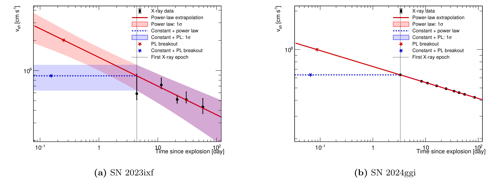
图注：SN 2023ixf（a）与SN 2024ggi（b）采用的激波速度演化。点为X射线等离子体温度推得的激波速度；实线为最佳拟合幂律向首次X射线观测以前的外推，虚线为另一种常速＋幂律参数化。在后一方案中，从激波突破至首次X射线时刻t_X，速度保持为v_sh(t_X)，之后遵循相同拟合幂律。因此两种参数化仅在没有X射线速度直接约束的早期不同。横轴为爆发后天数，纵轴速度单位cm/s。 左图红、蓝阴影分别为幂律及常速＋幂律方案的1σ带；红、蓝星号分别标这两种方案的激波突破，黑竖线标首次X射线观测；右图没有绘制同类误差带。
怎么看这张图：虚线与实线在首次观测后重合，而最早期明显分离。应把红蓝曲线当成两种未观测历史，不用后期数据的拟合好坏替其中一个背书；右图缺少完整温度误差，不能照搬左图的误差解释。
来源与置信度：arXiv PDF crop；source verified；https://arxiv.org/pdf/2610.08462#page=7
图5
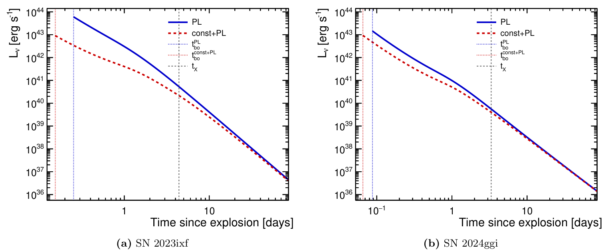
图注：SN 2023ixf（左）与SN 2024ggi（右）的中微子光度Lν随时间演化。假设通过质子—质子碰撞产生强子中微子，光度由观测吸收柱与激波速度的演化推得。两例均在突破后很快达到峰值，随后随星周介质密度下降而衰减；SN 2023ixf更高的预测光度反映更致密环境及更高强子碰撞效率。横轴为爆发后天数，纵轴为erg/s；蓝实线与红虚线分别表示幂律和早期常速＋幂律方案，竖线标各突破时刻及首次X射线时刻。
怎么看这张图：这里是模型的源光度，不是检测到的中微子计数。最亮部分落在早期外推区，且两套速度历史给出不同峰值与起点；还需折叠距离、能谱和赤纬有效面积才能讨论可探测性。
来源与置信度：arXiv PDF crop；source verified；https://arxiv.org/pdf/2610.08462#page=11
强相关工作
Nayana等对SN 2023ixf的X射线分析（DOI 10.3847/1538-4357/adc2fb）与Ferdinand等对SN 2024ggi的分析（10.3847/1538-4357/ae4ec6）是本研究的输入来源。本文新增的是由这些柱密度与温度演化搭建中微子预测链，因此这些文章不是独立确认本文中微子产额的证据。比较时应沿用同一距离、吸收丰度与观测时间范围。
Waxman与Loeb的早期激波中微子工作（10.1103/PhysRevLett.87.071101），以及Murase关于相互作用超新星的研究（10.3847/1538-4357/ab0422；10.1103/PhysRevD.109.103020），提供突破附近强子加速和多信使背景。本文主要改变环境约束的入口，并未消除这些模型共有的加速效率、逃逸与辐射转移假设；检索时可用shock breakout、X-ray absorption、interacting supernova neutrinos。
同一事件 / 同类源线索：
相似工作：
（未提供）
基础理论 / 方法工作：
相反观点 / 张力线索：
（未提供）
2. Does Diffusive Shock Acceleration Reach Steady State? Insights from a Near-Sun Shock Observed by Parker Solar Probe
- 来源：arXiv / astro-ph.HE
- 链接：https://arxiv.org/abs/2610.08034
- 作者：Immanuel Christopher Jebaraj, Mikhail Malkov, Nicolas Wijsen, Oleksiy Agapitov, Athanasios Kouloumvakos, Alexandr Afanasiev, Federico Fraschetti, Edin Husidic
- 公告 / 来源日期：2026-10-07
- 阅读层级：重点精读
- 评分：novelty 8/10，importance 8/10，relevance 9/10，final 9.35/10
- 推荐理由：Parker Solar Probe同时测量强日球激波的波谱与粒子前驱，给出自生散射的多重一致性检验及能量依赖困束转变；局部测量和稳态、准线性假设限制向其他加速源迁移，过渡能量不是全事件最高能量。
中文题目：Parker近太阳激波：能谱像稳态，输运却未必达到稳态
做了什么：扩散激波加速常把粒子在激波两侧反复散射的过程视作稳态，但漂亮的幂律谱并不能证明粒子和波已自洽平衡。本文用Parker Solar Probe在2023年3月13日、距太阳0.24天文单位处穿过的强近似平行激波，同时测量上游磁场涨落与高能质子的空间剖面。作者从波功率谱计算俯仰角散射和扩散系数，再预测稳态条件下粒子强度应如何向上游衰减，与实际数据逐能量比较。
结果显示，约1 MeV附近散射已很强，临近激波的平行平均自由程约0.21个太阳半径，却仍约为回旋半径的一百倍。实测强度衰减长度平均约为稳态预测的两倍，并随能量系统变化；约2.3–6 MeV出现约束能力减弱的过渡，低于常用年龄或尺寸上限。作者将其解释为波—粒子系统有限时间内尚未达到稳态的迹象，但单次穿越无法完全区分空间变化与时间增长。
为什么重要：本文的推进在于对同一激波独立构造两条约束：磁涨落告诉我们能散射多强，粒子剖面告诉我们实际被限制得多紧。仅从粒子谱倒推扩散会形成自我验证，这里则能发现稳态关系的不匹配。它支持把波增长时间列为限制条件，但仍是一场事件、给定湍流几何与共振模型下的诊断，不能直接推广成所有天体激波的普遍最大能量定律。
理论 / 观测 / 仪器方法价值：方法上值得借鉴的是从仪器测得的波谱到散射积分、平均自由程、扩散系数再到粒子梯度的闭合检验，并把噪声、波模、共振展宽和磁镜作用分别做敏感性检查。对超新星遗迹或日球层加速研究，这提供一种检验“假定Bohm扩散是否过强”的思路；迁移时必须重新评估磁场几何、湍流强度及粒子驻留时间。
为什么应该关注：高能伽马和中微子预报常把最大质子能量设为年龄与尺寸上限中的较小值。本文提醒，若产生散射波的反馈尚来不及建立，实际受限能段可更低。不过本次上游过渡不是整个太阳事件的最高粒子能量；激波处谱折转约10–20 MeV、地球处事件可延伸更高。应关注同类事件的波—粒子同步测量及时间分辨，而不是把2.3 MeV当成普适截断。
展开详细解读：文章讲解、背景、理论、重点章节、图表与相关工作
文章详细讲解
科学问题。 粒子沿磁场逃向激波上游时，可驱动磁波增长；磁波再将粒子散射回来，形成自限制反馈。稳态扩散激波加速要求这个反馈达到一定关系，不只要求激波存在得足够久。作者问的是：观测到的波强度、粒子梯度与加速时间是否在同一个物理模型中互相兼容，在哪个能段开始不兼容。
作者怎么做。 使用FIELDS磁场与粒子仪器，挑选近似沿上游磁场采样的时段，按15秒分箱估计磁波谱。散射计算区分左右旋波及其色散，加入湍流扫掠造成的共振展宽与压缩性磁镜散射，避免在90度俯仰角附近直接失去散射。随后将测得的扩散系数放进稳态输运方程，比较预测与实际的五个能道强度剖面，并检查扩散随距离的增长是否满足自生波稳态标度。
关键结果。 平均自由程在约0.7–1 MeV附近最小，但实测粒子前驱比相同扩散系数所预测的稳态前驱更宽。整体长度比约2.1±0.5，分箱比较为2.0±0.3；这些散布口径不应当作一次统一显著性。共振波功率与粒子强度的比例关系也随能量改变，扩散梯度在约1.3 MeV附近越过稳态参照。不同诊断共同指出能量依赖的不匹配，而非只依赖某一幅谱的外形。
局限和下一步。 探测器穿过前驱时同时经过不同位置与不同时刻，不能仅靠单次穿越把非稳态增长与空间非均匀性唯一分开。散射估计依赖近似一维波功率、磁镜效率和准线性条件；最靠近激波的强涨落区尤其不理想。后续需要多事件、多点或更完整的波—粒子时变计算验证，并用真实下游扩散限制加速时间。本文的过渡能段应保留为该事件中的输运诊断。
关键结果是怎么做出来的
观测几何首先决定哪些数据可用于反演空间。该激波在爆发后约四小时被Parker穿过，上游激波系流速约2400±300 km/s，磁场与激波法线夹角约8度，阿尔芬马赫数约7–7.5。作者把时间距激波转换为上游距离，同时区分使用流速定义的坐标与航天器相对激波闭合速度约2830 km/s对应的物理法向距离，二者相差约18%。
波谱处理并非直接把总磁扰动当作所有共振波。作者估计约0.83的约化slab波功率比例，在0.6–1范围检查；部分比值作截断、部分时点插值，磁场角度不合适的时段剔除。采用冷等离子体色散区分波模，能避免在MeV以下粗暴套用无色散阿尔芬波，从而改变共振条件与90度附近的散射缺口。
散射积分随后产生能量和距离依赖的平均自由程。1 MeV的前驱中值约2.7个太阳半径、16–84百分位约0.7–6.2；临近激波降到约0.21，区间约0.14–0.25。必须区分整个前驱与近激波值。最后15秒的相对涨落约0.6，使准线性近似受压；但1 MeV以上的扩散长度比这个薄层大约八倍，所以作者认为上游积分仍有诊断价值。
用这个扩散系数预测的稳态剖面比实测更陡。整体归一化不确定性可调整长度比，但比值随能量近似按0.36次方增长的趋势更难被一个统一校准因子消去。作者也增大磁镜散射系数，发现这种选择并没有恢复普遍的稳态一致性；由此强调应该同时看归一化、能量趋势及波功率—粒子强度关系。
约2.3 MeV时测得的前驱衰减长度为6.2±2.5个太阳半径，已超过约5.5的上游增强区尺度；2.7 MeV梯度与零相容，更高能部分能道不再有可分辨梯度。不过分析窗口变化会把首次消失的位置推到2.3–5.9 MeV，2.7比2.3 MeV更宽的bootstrap比例约91%，所以不是一个精确锐利、强显著的阈值。
年龄与尺寸对照提供物理解释而非独立发现。标准压缩比四、上下游扩散相等的估计给出年龄上限约8.9 MeV、前驱尺寸约9.5 MeV；若整体扩散翻倍，则分别降到约4.8与5.7 MeV。最不利系统组合会缩小与观测过渡的距离，不能把所有情况说成必然相差两倍。伴随Paper II的2–5 MeV带来自同一事件，也不能当独立样本再次累计证据。
展开背景、理论、公式、模型和章节导读
背景知识
激波加速的直观图像是粒子反复跨越一面有速度差的界面。每次往返获得少量能量，磁波提供改变运动方向的散射；若没有足够散射，粒子只会快速离开而不会持续加速。因此加速效率不仅取决于激波动能，还取决于环境能否及时提供合适尺度的磁涨落。
“扩散”是许多小角度散射后的统计描述。平均自由程表示粒子方向丢失相关性前大致行进的距离；它很长时，粒子更容易形成宽上游分布，也更难被留在有限激波附近。Bohm量级常把平均自由程设为回旋半径，但那是极强散射标度，不是所有激波自动满足的事实。
高能粒子又可自己激发波，所以扩散系数不是一个与粒子无关的外部常数。更多上游粒子带来更强波功率，更强散射反过来改变粒子梯度。这一非线性反馈若有充分时间建立，可能达到稳态自限制关系；若波增长慢于流体穿过前驱的时间，则瞬时粒子谱即使近似幂律，空间分布仍能偏离稳态。
近太阳观测特别有价值，因为强磁场、较高密度和短距离允许原位同时测波与粒子。远处超新星遗迹通常只能通过同步辐射、伽马射线或形态间接推断散射。Parker事件提供了可把理论链拆开的实验，但它的非相对论太阳激波、观测几何和有限能段也限定了向其他天体迁移的范围。
俯仰角是粒子速度相对平均磁场的夹角。90度附近粒子沿磁场速度很小，最简单共振理论可能给出散射缺口，使平均自由程积分异常敏感。加入波色散、共振展宽和磁镜作用，是为处理这一实际物理缺口；各项都带有模型输入，不能把“已避免数值发散”误认为微观散射已被唯一测定。
基础理论 / 方法脉络
磁波散射由粒子回旋与波相位的共振决定。给定波数、频率、粒子速度及俯仰角，只有满足近似相位锁定的波能持续改变粒子方向。本文用实测波功率来计算俯仰角扩散，再沿所有俯仰角积分得到平行输运，因此小功率或共振空缺的区域可能强烈控制最终平均自由程。
强度剖面来自扩散与流体平流的竞争。粒子从激波向上游扩散，而流体把它们带回激波；若状态不随时间变化，给定扩散系数就决定了强度对距离的衰减率。本文的检验关键是不从同一个强度梯度定义扩散，再声称两者相符，而是以磁场数据先求扩散，再预测粒子。
自生波稳态给出比普通输运更强的关系。当共振波能量与粒子强度成正比、散射率随波能量增加时，扩散系数近似与强度成反比。把这个关系放回稳态输运，会得到扩散随上游距离线性增加、强度按倒数下降。任何一项单独近似相符都不够，必须检查二者是否在同一能段共同成立。
有限年龄上限则是把逐步增加动量所需的时间累加，与事件可用时间比较。尺寸上限要求扩散长度不超过可以维持散射的区域。它们都依赖扩散输入和激波压缩，尤其下游扩散很难从本次上游观测唯一推定，因此上限应视为条件性参考；若波生成本身不足，达到这些理论上限之前也可能已出现约束失效。
低能端还要检查扩散近似是否成立。粒子速度只比流体速度大一点时，分布可能高度各向异性，此时一个标量扩散长度不足以概括输运。作者据此不把约0.3 MeV以下结果纳入同等可靠的扩散解释。把模型有效域写在谱图旁，比无条件延伸一条幂律更重要。
公式与推导
从准线性共振图像出发，本文附录A的俯仰角扩散结构可压缩写成
$\mu$ 为俯仰角余弦，$\Omega$ 为回旋角频率，$I_n$ 是所选波模功率，$\mathcal R$ 为展宽后的共振函数。其细节按原文分别处理左右旋波和磁镜项；这里展示依赖结构，不把它简化为所有波同一色散的数值公式。
将各角度的散射瓶颈汇总，附录A给出
$D_{\mu\mu}$ 单位为每秒，因而 $\lambda$ 为长度、$\kappa$ 为长度平方每秒。分母说明为何90度附近很小的散射系数可能控制全局输运，必须明确磁镜散射的假定。
本文距离坐标与物理法向距离不同：
$u_1$ 是上游激波系流速，$U_0$ 是航天器与激波的闭合速度。在本次几何中二者比约1.18。把观测时间转换后，后续梯度公式必须与坐标定义配套，不能混用一个距离和另一个平流速度。
稳态、近似一维扩散的可检验强度形状为
这个式子按本文坐标写出，$j_0$ 是近激波归一化。若扩散不变，就是指数前驱；若扩散随位置变化，就要积分而不能用一个全局平均值替代。与实测 $L$ 比较，才有约两倍的长度差异。
在零背景波、自生波主导的特定稳态极限，论文检验
后两个式子由前一个关系代入稳态梯度式积分而来。它们共同预测扩散斜率与强度曲线；这个极限忽略了外来湍流和显著时间变化，不能把它当所有观测区必须遵守的恒等式。
对应的波—粒子诊断写为
作者测得 $g$ 在约0.4 MeV接近一，约1 MeV降至0.7、2.3 MeV约0.6。这里拟合的是同一事件内随位置变化的相关标度，不是独立源族群的回归，也不单独给出因果方向。
为判断加速时间，先用标准平面激波表达式作教学连接：
$u_2$、$\kappa_2$ 分别为下游流速与扩散系数。本文基准取压缩比四、上下游扩散相等，因而使用
这一化简说明系数20来自哪些假设。若实际下游扩散更小，加速时间会缩短、年龄上限会上移；因此不能只给一个没有条件的上限能量。
最后把有限区域与扩散成立条件一起列出：
前一个是尺寸约束，后一个是近各向同性扩散的尺度检查。本文的2.3–6 MeV过渡是实测前驱失去约束的宽区间，不等于把这两个不等式求等号得到的理论最大能量；两种诊断不同，正是论文要比较的内容。
模型拟合 / 应用方法
先把磁场与粒子数据统一到可比较的时间窗。磁谱计算使用15秒分箱，粒子剖面按合适统计精度进一步分箱；磁场偏离采样方向较大的时段被排除。这种选择使一维解释更可行，同时也意味着结论不覆盖整段上游的任意磁场结构。插值、比值截断和窗口选择都应进入敏感性记录。
散射模型中波功率归一化、slab比例和磁镜系数分别变化。基准slab比例约0.83是约化谱意义下的比例，不宜直接译成全部三维磁能的83%。磁镜效率在0.3–3范围测试，改变90度缺口及自由程；它不能被当成已由观测独立拟合得出的精密数值。
粒子剖面同时用经验幂律和从磁谱得到的稳态曲线描述。先允许强度归一化适配，再比较斜率和特征长度，才能区分绝对强度标定与输运形状。约2.1±0.5或2.0±0.3代表不同汇总方式的散布，报告不把这些数字转换成一个未经作者建立的全局拒绝显著性。
过渡能量的提取依赖内外窗口。某个能道拟合梯度与零相容，表示在当前区间和误差下未分辨衰减，并不表示物理强度绝对恒定。窗口变化使首次无梯度能量移动到2.3–5.9 MeV，故本报告保留范围和具体测得的长度，而不压成小误差的单值。
年龄与尺寸检验再使用同一扩散输入。整体放大扩散虽可部分接近粒子剖面，却也改变加速时间和理论上限，所以不能只调一个比较面板。作者列出的系统组合与下游假设说明现有证据倾向有限时间波增长的解释，但仍需要时变模型、其他事件与下游约束共同复核。
重点章节 / 结果段落怎么读
-
读观测设置与§II：明确时间到距离的转换、激波系和航天器闭合速度，随后才比较长度。
-
读附录A与图3前两面板：把波模、共振展宽、磁镜散射和平均自由程连起来，注意低能扩散有效域。
-
读图3后两面板及图4：比较实测强度与独立预测，再检查扩散斜率、波功率相关是否同时满足稳态。
-
读年龄/尺寸讨论与附录系统检验：区分观测过渡、模型上限及整场事件最大能量，并检查窗口改变的影响。
关键图表与解读
图3
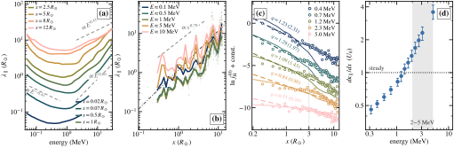
图注：平行平均自由程随能量和距离的变化、强度剖面及扩散系数的增长。(a) 标示距离处的平行平均自由程随能量变化，为邻近15秒箱的中位数；0.02和0.07个太阳半径处使用单箱，虚线为拟合斜率。(b) 标示能量处平均自由程随距离变化，淡点为15秒值、标记为对数距离箱中位数，虚线为联合幂律斜率，点划线为平均自由程等于法向距离。(c) 五个能道的各向同性强度以圆点表示并作纵向平移；虚线为强度随距离的幂律拟合并标注指数，实线为用各能道实测扩散系数预测的稳态剖面，括号内给拟合指数；点线标记3个太阳半径。(d) 扩散系数增长速度以闭合速度U₀为单位，误差棒为16–84百分位；点线位于U₀，灰带为Paper II在航天器系中2–5 MeV的过渡。
怎么看这张图：先用(a)(b)理解散射强度，再在(c)比较同一能道的实测与稳态形状，最后看(d)是否满足自生波稳态斜率。曲线归一化接近不能代替斜率一致；灰带来自同一事件的伴随分析，不是独立确认。
来源与置信度：arXiv HTML；source verified；https://arxiv.org/html/2610.08034v1/Fig_slices.svg
图4
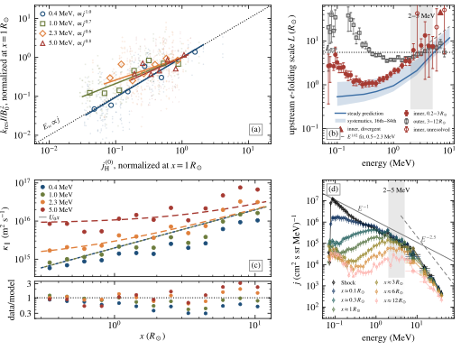
图注：波生成关系、上游尺度与前驱质子谱。(a) 四个能道的共振slab功率对粒子强度，二者均在距激波1个太阳半径处归一化；淡点为15秒值、空标记为强度箱中位数、实线为幂律拟合，点线是指数g=1。(b) 内窗口实心圆与外窗口空方块表示e折叠尺度及1σ误差；空圆表示内窗口未分辨的拟合，三角表示发散拟合，2 MeV以上实心、以下空心。虚线为内尺度幂律，实线及16–84百分位带为磁镜参数取1时、实测扩散系数的稳态尺度，点线为粒子增强区尺度。(c) 四个能量的扩散系数距离箱中位数与仅拟合近激波归一化的线性稳态模型；灰线为U₀x，下方条带为数据/模型之比，点线为一。(d) 六个上游距离及激波处的质子谱，EPI-Lo、LET、HET分别用圆、方、三角表示；竖棒为采用的不确定度，LET与HET横棒为能道宽度。(b)(d)灰带标记Paper II在航天器系中的2–5 MeV过渡。
怎么看这张图：重点看(b)高能误差与未分辨符号，而不是把首次上穿点线读成精确截止；(a)(c)提供不同的稳态一致性检验。(d)仍有更高能粒子，说明前驱约束过渡不等于全事件最高能量。
来源与置信度：arXiv HTML；source verified；https://arxiv.org/html/2610.08034v1/Fig_balance.svg
强相关工作
本文采用的扩散激波加速脉络来自Bell、Drury等经典工作，关键问题是波由粒子生成时，稳态输运与自生散射应同时满足什么标度。相对于仅用幂律能谱支持加速，本文新增的是由原位波谱独立算出输运，再用粒子空间剖面检验。经典理论是这里的基准极限，不应写成被一场事件普遍否定。
同一2023年3月13日事件的Paper I与Paper II提供激波及波增长背景，但与本文共享观测对象及部分数据。图4中的Paper II过渡带可用于检查物理一致性，不能当成独立实验提高显著性。与今天的老年超新星遗迹工作并读时，可比较“可用扩散和波增长是否自洽”这个问题；太阳事件的数值不能直接移植到遗迹。
同一事件 / 同类源线索：
相似工作：
（未提供）
基础理论 / 方法工作：
相反观点 / 张力线索：
（未提供）
3. Optimal Photon Counting with Fast, Low Noise Astronomical Imagers
- 来源：arXiv / astro-ph.HE
- 链接：https://arxiv.org/abs/2610.07137
- 作者：Jack T. Dinsmore, Christopher Layden, Roger W. Romani, Vera L. Berger, Kevin B. Burdge, Geoffrey Mo, Deepto Chakrabarty, Emma T. Chickles
- 公告 / 来源日期：2026-10-07
- 阅读层级：重点精读
- 评分：novelty 8/10，importance 8/10，relevance 8/10，final 9.00/10
- 推荐理由：逐像素概率权重把亚电子读噪映射为弱源通量信息，并用光学脉冲星及GX 339-4检验。B0540信噪比提升56%，B0656脉冲幅度信噪比提升47%；其常数模型拒绝显著性另由6.1升至14σ，口径不同。方法贡献具体，但依赖像素响应和星历标定，不是无条件消除读噪。
中文题目：低读出噪声高速相机：保留每个像素值中的光子信息
做了什么：当相机读出噪声低于一个电子时，像素测量值虽仍是连续的模拟量，却已经包含“零个、一个、两个光电子”不同概率峰的信息。简单求和没有充分使用这些峰，逐像素四舍五入又会把不确定的读数硬判为整数。本文提出以真实偏置噪声分布和光电子响应构造似然，直接估计每像素每帧的平均入射光子数，并用于Magellan上proto-Lightspeed的高速光学成像。
作者以Crab、B0540、Vela和B0656等已知脉冲星验证。B0540的光变信噪比提升约56%，在平方根曝光标度成立时相当于约2.4倍曝光；B0656相对常数光变的拒绝显著性从6.1σ升至14σ，但其脉冲幅度信噪比增幅为47%，二者不能混称为130%的普遍测光提升。亮Crab的不同方法光变在约1%范围内一致，提供所测通量区间的偏差检查；论文没有宣称发现新的脉冲星。
为什么重要：高速测光往往必须把曝光切成毫秒帧，单帧每像素光子很少，重复读出的噪声会直接限制暗源。新方法不靠丢掉时间分辨率换信噪比，而是利用低噪声探测器已存在的离散光子信息。贡献是把真实非高斯像素噪声和非理想电荷响应纳入估计，并在天体数据上展示收益；提升大小仍取决于通量、噪声、背景与所用统计量。
理论 / 观测 / 仪器方法价值：可借鉴的是先建立逐像素响应概率，再在相位箱或时间箱内合并似然，而不急于给每一帧输出确定的光子整数。噪声峰有随机电报噪声、多峰或尾部时，均方根读噪已不足以描述可用信息。实际迁移需要足够偏置帧、稳定增益、量子响应标定和独立亮源检查，不能仅把相机说明书上的一个读噪数代入理想高斯公式。
为什么应该关注：本文直接适用于暗弱光学脉冲及快速变化源，特别是已有定时星历时保持毫秒时间分辨率的观测。它与高能脉冲相位比较有方法联系，但光学相位折叠的提升不等于在TeV能段也存在同样脉冲。对IACT等已有离散事件读出的仪器，数据生成过程不同，不能照搬相机权重；真正可迁移的是保留响应不确定性、避免过早硬阈值化的统计思路。
展开详细解读：文章讲解、背景、理论、重点章节、图表与相关工作
文章详细讲解
科学问题。 单帧暗源信号往往少于一个电子，读出值的分布却不只是“真实通量加一个高斯误差”。当读噪足够小时，零、一、二电子分别形成可分辨的概率结构。求和只利用平均值，四舍五入又把噪声峰重叠区域误判成确定计数。作者希望在真实探测器不完美的情况下，把这些概率信息完整用于通量估计。
作者怎么做。 先用大量偏置帧标定每个像素的噪声分布，用三个高斯分量近似随机电报噪声等结构，再描述入射光子产生多少可读电子的条件概率。入射光子数服从泊松分布，读出的模拟值是潜在电子数与噪声卷积。将每个像素、相位箱内的读数做成直方图后，最大化似然得到平均光子数；作者称为weight方法，但其本质是响应模型下的统计估计。
关键结果。 理想模拟中，方法在不同读噪和通量下不劣于求和或取整；真实脉冲星图像与光变展示暗源优势。Vela的两个主脉冲在新方法中更清楚，B0540信噪比约增56%，B0656相对常数模型的显著性大幅提高。亮Crab检验则表明在所测通量范围未见超过约1%的显著方法间差异，因此有证据支持“提升不是明显形状扭曲换来的”，但未建立所有通量与所有像素的通用无偏定理。
局限和下一步。 电荷陷阱用平均参数化处理，尚非逐像素完整量子效率模型；非零电子时的噪声尾部也未完全标定。直方图压缩丢失了每一帧的部分相位边界和亚像素位置信息，严重抖动或一帧跨多个相位箱时未必最优。未来可构造逐帧似然、完善响应与位置模型，并在未知周期搜索中重新校准试验因子；本文使用外部星历，不能将其显著性直接用于盲搜。
关键结果是怎么做出来的
首先是探测器标定。实验使用ORCA-Quest 2 CMOS的超静模式，典型读噪约0.22电子，但像素间差异与多峰噪声不能忽略。作者用偏置帧建立每像素读数分布，而不是对所有像素统一施加一个高斯宽度。概率模型还排除硬件量化中不会出现的读数，避免把模拟上连续的响应误当成真实数字转换器的全部输出。
其次是非理想光电子响应。简单认为一个光子总变成一个可读电子无法解释全部标定分布；作者引入少量电荷陷阱的参数化，采用四个陷阱、约0.11的平均参数示范。更自由的反卷积参数太多且不稳定，所以选择可约束的简化模型。图3的比较主要支持低通量区域的分布描述，并不自动证明任意高通量、任意条件下都达到百分比准确度。
观测层使用400–700 nm左右的无滤镜宽波段。Crab以1.3 ms采样约24秒，B0540约3 ms、6.3分钟，Vela约3 ms、25分钟，B0656约10 ms、1.2小时。它们亮度和曝光不同，方法提升不可直接跨源比较；数据还存在导星或光路偏移等实际条件，尤其Vela缺少可作统一参照的合适比较星。
定时层用PINT与各源既有星历折相，包括Crab的Jodrell资料、B0540的IXPE星历、Vela的Fermi资料和B0656的UTMOST资料。作者在约0.6角秒孔径内提取光变，选定on/off相位形成差分图。这是已知周期下的检验，on/off选择与星历条件都应保留，不能把同一数值解释成全参数盲搜的发现显著性。
结果层要拆开不同统计量。B0540光变提升56%、图像提升57%；B0656脉冲幅度信噪比提升47%，而恒定光变的拒绝显著性由6.1σ到14σ。后者约为2.3倍，若使用同一平方根时间标度可对应约5.3倍曝光，但它不是所有光变参数误差都缩小到同一比例。GX 339-4的非周期快速变化也有约51%的改善，说明方法不只服务于折叠脉冲。
最后检查偏差与成本。Crab峰值中心像素约0.6光子每帧，三个方法的光变在误差内一致、差异低于约1%；这是一个亮源上的经验控制。光变处理时间增加约5–20%，图像测光可慢约三倍，Vela25分钟数据在笔记本处理约10分钟。速度优势与精度收益都受数据组织和硬件影响，作者并未给出整个观测系统端到端的普适加速承诺。
展开背景、理论、公式、模型和章节导读
背景知识
光子到达是离散事件，但普通成像相机通常记录累计电荷转换出的模拟读数。一个像素在一帧里平均收到0.1个光子，并不意味着每帧都有十分之一个光子，而是大多数帧为空、少数帧有一个、极少数帧有更多。这种泊松结构在低读噪时可以从读数分布中看出来。
传统求和在高通量极限很自然：许多光子的涨落和读噪合起来，平均读数足以提供稳健估计。但高速成像把总曝光切碎，每帧都要读出一次；总读噪随帧数累积，尤其对暗源不利。延长单帧曝光可以减轻读噪，却可能抹掉脉冲或快速变化，因此统计方法的改进具有实际时间分辨价值。
逐像素取整试图利用离散结构：读数靠近一电子就算一个，靠近零就算零。然而峰重叠时，两个几乎相同的读数可能被分到不同整数，错误的阈值还可能引入偏差。概率方法保留“这个读数可能来自几个不同电子数”的不确定性，让整体数据决定平均光子率，而不是先把每帧判死。
真实CMOS像素还会受随机电报噪声、电荷陷阱和增益差异影响。随机电报噪声可使偏置在不同状态间跳变，产生多个噪声峰；陷阱则影响光生电荷被读出的概率。因此相同均方根读噪的两个像素，未必包含同等可用信息。本文从实测分布出发，正是因为一个噪声标量不能描述这种结构。
光学脉冲星提供很好的测试场景：位置和周期事先已知，弱脉冲在许多周期叠加后出现，可以同时比较光变、相位和on/off图像。但这种有先验的任务比发现全新未知周期源更容易；外部星历减少了搜索维度，所得显著性不应带着相同数值直接迁移到盲搜结论。
基础理论 / 方法脉络
统计模型包含三个层次：光子如何到达、光子如何转换为可读电子、电子如何变成带噪声的读数。每一层都描述一种实际随机过程。对所有未观察到的光子数和电子数求和，得到某一模拟值出现的概率；这样既保留离散性，也允许真实探测器偏离理想一光子一电子。
逐像素噪声分布由偏置数据约束。偏置帧没有目标光子，却保留读出链的分布形状，因此能区分单高斯与多峰状态。把这一分布平移到不同电子数附近，构造有光读数概率。该平移近似若随信号强度改变而失效，通量估计会受偏，所以亮源和不同通量标定仍不可少。
在同一相位或时间箱内，若光子率可视为恒定且帧独立，读数的顺序不再携带该参数的额外信息，直方图可以高效表示似然。相反，若帧内相位改变、源位置抖动或噪声有时间相关性，直方图就会把有用结构压掉。作者的性能表现因此同时依赖响应模型和对数据可合并条件的判断。
最大似然的优势不是凭空减少泊松涨落，而是减少把模拟读噪与光子计数混合造成的信息损失。理想情况下，平均光子数的统计误差仍受光子数限制。所谓“有效读噪趋零”指估计器几乎不再多付读出噪声代价，不代表相机真实电子噪声被消除，也不意味着每一帧的光子数被百分之百识别。
最后应分清通量精度、脉冲幅度信噪比、拒绝常数模型的显著性和曝光等效时间。它们依赖不同模型和统计量。只有在噪声组成、信号形状与处理方法不随曝光改变、且信噪比按时间平方根增长时，才能把某个信噪比比值平方解释为等效曝光增益。
公式与推导
设单像素单帧平均入射光子数为 $\lambda$，真实光子数为 $\gamma$。论文式1采用
$\lambda$ 是每像素每帧的无量纲期望计数，而非每秒通量；若要换成光子率还需除以曝光时间，并核对透过率与有效面积定义。
设可读电子数为 $\epsilon$，增益换算后的读数为 $u$，偏置噪声分布为 $B$。论文式2把响应写成
对潜变量求和而不提前取整，是整个方法的核心。$P(\epsilon\mid\gamma)$ 描述电荷产生与损失；理想一光子一电子时，它才退化成只保留 $\epsilon=\gamma$ 的形式。
偏置噪声用三个高斯成分标定，其一般结构可写为
这里是对论文模型的统一记号表达，实际参数存在约束，不能把所有幅度、中心和宽度都当独立自由度。多峰形状反映噪声状态，不能将其误当成来自目标的多光子峰。
若同一像素和相位箱中读数 $u$ 出现 $n_u$ 次，在独立同分布前提下对数似然为
常数 $C$ 与待估光子率无关。直方图因此减少重复计算，同时保留此模型下与 $\lambda$ 有关的信息；不同像素的响应仍须分别代入，不能先无区别混合所有像素。
论文用解析梯度与曲率进行数值优化，基本Newton步骤为
实际迭代需保留非负通量与收敛检查。作者采用相对变化约千分之一及迭代上限等设置，不能把有限步收敛等同响应模型正确；还需检查边界解和低计数时曲率是否能可靠描述不确定性。
为解释为什么完整分布含有更多信息，教学上可写Fisher信息与渐近方差下界：
$N$ 为帧数，离散求和对应数字化读数；连续理想化时换成积分。这是正确模型、独立样本和适当正则条件下的教学解释，不是论文为每个真实数据箱证明的有限样本误差保证。
对理想线性相机的简单平均，独立泊松噪声与高斯读噪给出教学基准
$\sigma_r$ 以电子为单位。暗源时第二项占主导，因此保留离散峰信息最有价值；亮源时泊松项主导，不同合理方法应逐渐接近，这也是Crab控制实验的逻辑。
相位折叠时，已知星历把到达时间映射到转动相位。用于解释的局部形式为
这是标准教学表示，真实分析使用PINT及外部星历而非只保留这两个项。相位箱内的似然估计产生光变；若一帧跨越多个相位箱，简单直方图法未利用全部时域信息。
最终把同一统计量的提升换算为曝光，条件性关系是
对B0540的1.56倍光变信噪比得到约2.43。B0656的14/6.1对应的是恒定光变拒绝显著性的比较，其平方约5.3；这与幅度信噪比增47%属于不同口径，不能相互替换。
模型拟合 / 应用方法
标定输入首先是偏置帧、增益和光照数据。作者以像素为单位拟合噪声分布，处理三高斯结构和数字量化值，再用电荷陷阱模型解释光子到电子的概率。逐像素读噪模型与平均量子响应模型的精细程度不同，应在复用时分别记录，不能统称为“完整探测器响应已知”。
通量估计把每个像素在相位或时间箱内的读数直方图送入似然。作者利用解析梯度与Hessian，设置有限迭代和收敛阈值，并以bootstrap估计误差，默认重采样次数较少。对于要报告高尾部显著性或强相关噪声的应用，需进一步检查重采样是否保持真实时间相关性；本文所用设置不构成所有任务的推荐精度标准。
图2先隔离理想高斯读噪下估计器差异，再由实际校准数据检查非高斯分布。两种验证不能合并：理想模拟中的性能排序依赖模型完全正确，真实相机响应残差则决定系统偏差。低通量区模型与直方图的符合程度不应被转换成未经报告的所有通量误差上限。
天体检验保持同一批原始数据，分别使用求和、取整和似然估计，比较on/off图像、归一化光变及脉冲显著性。外部星历、孔径与相位选择是控制条件；作者并未扫描未知频率后再给出同样的显著性。Vela可能的额外小峰仍受信噪比限制，不能当新辐射成分宣布。
亮Crab用于检查方法是否扭曲光变形状，非周期GX 339-4用于说明无需周期先验也能改善快速变化测量。两者扩大了验证范围，但仍未覆盖所有颜色、背景、光照和读出模式。下一步应在目标应用的通量范围重新做响应稳定性、时间相关噪声、饱和与增益漂移检查，并在必要时采用保留逐帧位置的似然。
重点章节 / 结果段落怎么读
-
读§II与图2：先分清入射光子、可读电子和模拟读数，理解求和、取整、似然三种方法各保留了什么信息。
-
读§III标定与实现：看逐像素偏置模型、陷阱近似与直方图压缩的输入条件，不把理想高斯结果直接当真实相机标定。
-
读§IV图6：逐源比较相同数据下的光变和on/off图，明确已知星历、相位选择与不同显著性口径。
-
读图7及讨论：用亮Crab检验形状偏差，再看抖动、跨相位箱和逐帧似然的尚未解决部分。
关键图表与解读
图2
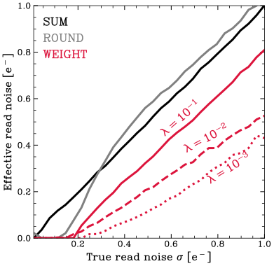
图注：不同方法在模拟中得到的通量不确定度随高斯探测器读出噪声的变化。实线、虚线、点线分别对应不同源通量λ，单位为每像素每帧计数。本文的weight方法在所有真实读噪值下优于把全部像素值相加的sum方法，并优于或等于逐像素取最近电子整数的round方法；它还能在比其他方法更大的真实读噪下达到零有效读噪。 横轴是真实读噪σ、纵轴为有效读噪，均以电子数为单位；黑、灰、红分别为sum、round、weight，三种线型对应λ=0.1、0.01、0.001。
怎么看这张图：曲线比较建立在理想高斯响应正确的条件下。所谓零有效读噪是通量估计接近光子统计极限，不是电子学噪声消失；真实像素的多峰噪声还需后续标定。
来源与置信度：arXiv HTML；source verified；https://arxiv.org/html/2610.07137v1/theory.svg
图6
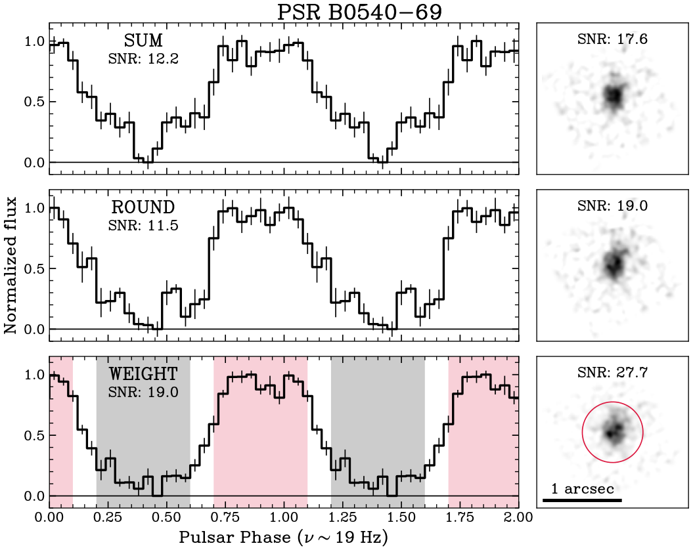
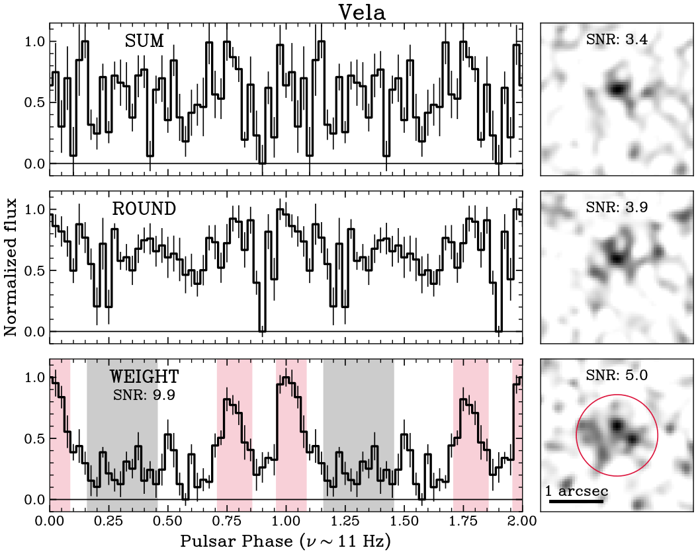
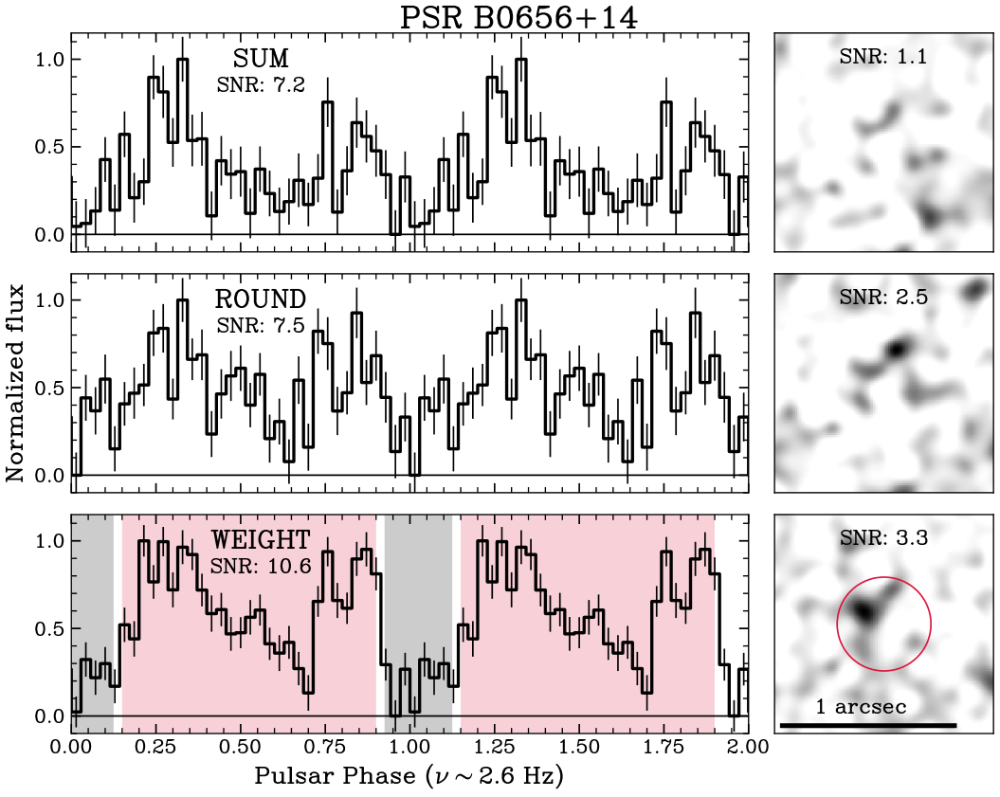
图注：从上到下分别为B0540（V约22.4）、Vela（V约23.6）和B0656（V约25）的归一化光变（左）及on−off差分图像（右）。光变图标出红色on相位段和灰色off相位段。各条光变由不同方法提取，本文引入的weight方法在这些例子中均表现更好。 每个源面板内由上到下为sum、round、weight；左图横轴为脉冲相位、纵轴为归一化通量，右图标尺为1角秒。
怎么看这张图：同一行比较三种提取方法，先看脉冲形状是否一致，再看误差和差分图的源对比。三行曝光与亮度不同，不能直接按图高低给仪器排序；B0656的幅度信噪比与常数模型拒绝显著性要分开读。
来源与置信度：arXiv HTML；source verified；https://arxiv.org/html/2610.07137v1/b0540-lc.png；https://arxiv.org/html/2610.07137v1/vela-lc.png；https://arxiv.org/html/2610.07137v1/b0656-lc.png
强相关工作
proto-Lightspeed的仪器工作（原文所引arXiv:2601.16268）提供高速低噪相机和观测系统背景；本文新增的是对其读数的概率处理与天体验证。PINT定时工具（arXiv:2012.00074）用于将已知脉冲星星历映射到光子相位，这一外部定时信息是实验设计的一部分，不能把方法收益归因于发现了新的周期。
原文讨论的EMCCD概率光子计数工作（arXiv:1111.2066）也强调响应统计比简单阈值更有信息，但倍增噪声与CMOS读出噪声的生成机制不同，不能交换标定模型。已有B0540高速光学研究（arXiv:1012.0738）提供相似天体应用背景；本文对比的是同批数据的三种估计器，而非重新比较历史不同仪器的绝对灵敏度。
同一事件 / 同类源线索：
相似工作：
基础理论 / 方法工作：
相反观点 / 张力线索：
（未提供）
相关简报
1. The Potential Contribution of Radiative Supernova Remnants to the Local Cosmic Ray Spectrum
- 来源：arXiv / astro-ph.HE
- 链接：https://arxiv.org/abs/2610.08474
- 作者：P. Cristofari, V. H. M. Phan, S. Recchia, S. Gabici
- 公告 / 来源日期：2026-10-07
- 阅读层级：相关简报
- 评分：novelty 7/10，importance 8/10，relevance 10/10，final 9.40/10
- 推荐理由：辐射期DSA和重加速的能量预算约束直指银河宇宙线来源，持续加速为条件而非实测。
中文题目：老年超新星遗迹如何改变注入星际介质的宇宙线谱
问题、方法与结论：作者把热粒子的新加速、已有宇宙线的再加速、逃逸及困禁后的绝热损失一起积分到超新星遗迹的辐射冷却阶段，比较代表性的Ia型和II型环境。晚期激波虽已无法达到PeV，仍能改变低能粒子的累计输出：主要差异在GeV至TeV区间，Ia型影响可延伸到约10 TeV。辐射前驱预热削弱子激波时，累计相空间谱可软化至动量指数约4.2–4.3；这里不是地球上直接测得的能谱指数。
意义与贡献：工作提醒我们，瞬时激波把冲压转成宇宙线的效率，与整个遗迹一生转换的爆炸能份额不同。持续采用10%的瞬时效率会在该模型中较早积累过多质子能量；约1%或随激波减速下降的效率更合适，但这仍依赖遗迹寿命、环境和再加速处方。
可借鉴之处：可借鉴的是按注入时间追踪粒子，再分别汇总逃逸与困禁分量，而不把当前伽马谱当作全部历史输出。与HI、CO气体分布结合的强子能量估计，也有助于检查伽马辐射中轻子与强子的分担。
局限与关注点：球对称、平均磁场和终末统一释放均是简化；电离与前驱加热未做自洽辐射输运。II型环境氦丰度高十倍只是示范性假设，质子/氦比的定性相符不是唯一解释，尚需同时满足硼碳比的银河传播计算。
图3
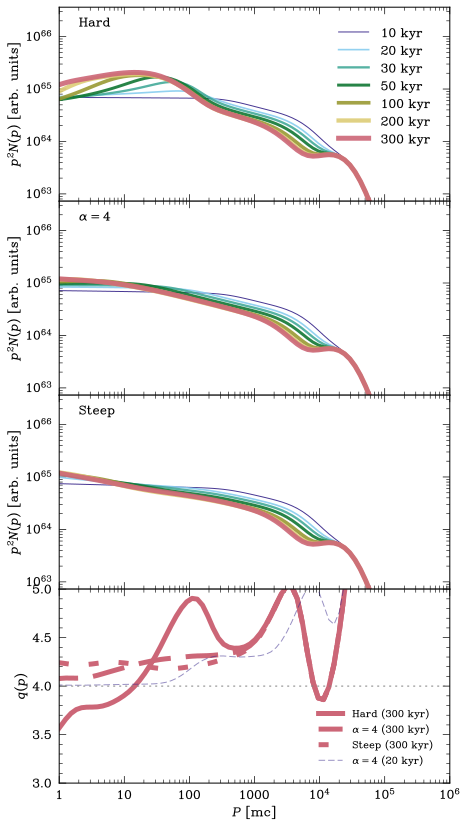
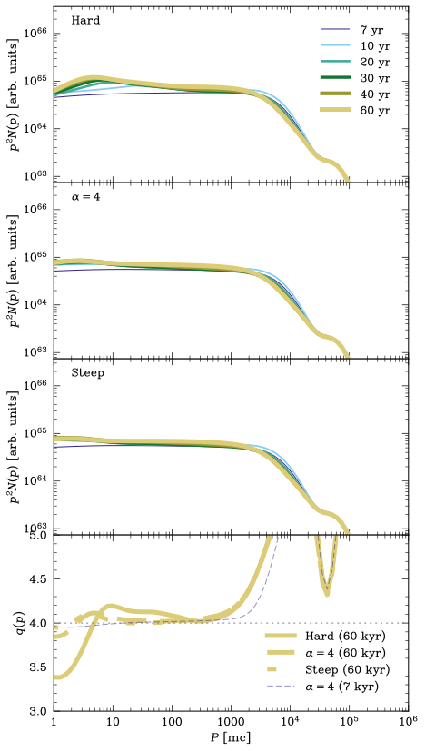
图注：Ia型（左）与II型（右）超新星遗迹的总宇宙线质子谱。硬谱、试验粒子和软谱三种情形对应辐射阶段不同的加速谱斜率假设：硬谱由较大压缩比产生，试验粒子情形取压缩比r=4，软谱对应由光致电离前驱形成的子激波上的加速，见§2.2。
怎么看这张图：比较的是累计注入谱在不同晚期加速处方下的形状，不是三条对地球观测谱的独立最佳拟合。低能差异更明显，说明辐射阶段可以改变总输出而不成为PeV加速器。
来源与置信度：arXiv HTML；source verified；https://arxiv.org/html/2610.08474v1/multi_spectrum_drury_TypeIa.svg；https://arxiv.org/html/2610.08474v1/multi_spectrum_drury_typeII.svg
2. Power-Law Injection Spectrum from an Ensemble of Reconnecting Current Sheets
- 来源：arXiv / astro-ph.HE
- 链接：https://arxiv.org/abs/2610.07160
- 作者：Omar French
- 公告 / 来源日期：2026-10-07
- 阅读层级：相关简报
- 评分：novelty 8/10，importance 7/10，relevance 10/10，final 9.35/10
- 推荐理由：由电流片长度分布解析连接粒子注入谱，直接关系盘冕高能粒子但依赖群体标度。
中文题目：电流片尺度分布怎样决定非热粒子的注入谱
问题、方法与结论：低等离子体β、强导引磁场的亚阿尔芬湍流中，作者把不同尺度电流片的数量、粒子遇到电流片的几何截面，以及单次重联电势增能连起来，推导热粒子进入非热池的源项。电流片数随尺度的指数为x、磁扰动标度指数为κ时，供给受限情形的注入指数为1+(x−2)/(1+κ)；因此电流片的统计结构本身能产生硬注入谱。
意义与贡献：这为常被当作自由参数的种子粒子供给提供了可检验的物理来源。模型还把总注入能量限制在湍流级联可供给的功率内，避免仅凭硬谱就得到无限或过大的非热能量。
可借鉴之处：可借鉴的是把粒子遭遇率与单次能量收益分别建模，再用能量预算约束归一化。Crab射电谱若对应未经冷却和逃逸改变的注入，可反推电流片尺度指数约2.6–2.8，但这只是条件性对应。
局限与关注点：本文得到的是注入源项，不是最终稳态粒子谱或辐射谱。尺度统计借自MHD模拟，被识别的电流片未必全部正在重联；粒子多次返回重联区的强导引场条件也需进一步动理学验证。对NGC 1068中微子的联系仍属种子机制设想。
图2
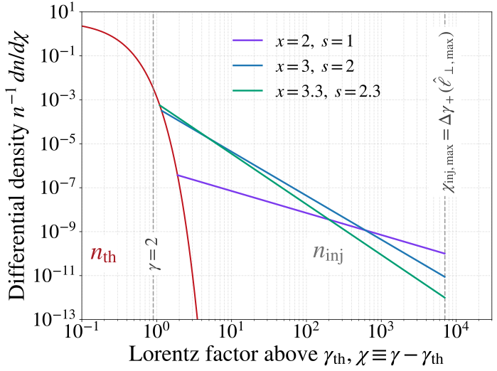
图注：经过一个外尺度周转时间t=L₀/(M_Aβ_Ac)后，注入粒子与热储库的微分数密度n⁻¹dn/dχ随χ=γ−γ_th变化。每条幂律的参与热粒子份额取级联功率上限，使各源项供给相同的能量密度ε_inj M_A²B₀²/(8π)。x=2、3、3.3分别代表等遭遇情形、硬注入边界和MHD值，跨越现有测量提示的范围。各幂律从高于红色热储库的位置画起；热储库为温度0.1mc²的Maxwell–Jüttner分布，这个起点接近χ≈γ_th的注入阈值。虚线标出γ=2和最大单次遭遇增能。基准取γ_th=1.1、σ_c=1、冷极限σ_h=σ_c、L₀/d=10⁸、最小横尺度10d、最大无量纲横尺度10⁻²、β_rec=0.1、\(M_A=0.1\)、κ=0、ε_inj=1。由于最大参与份额与正增能概率p₊成反比，图中曲线不依赖p₊。
怎么看这张图：所有曲线受同一总能量预算约束，斜率变硬不等于总能量增加。图中是注入及热储库分布，尚未加入持续加速、辐射冷却和逃逸，不能直接作为Crab电子稳态谱。
来源与置信度：arXiv HTML；source verified；https://arxiv.org/html/2610.07160v1/Qinj_vs_gamma.svg
3. Parameter degeneracy and information loss in inverse flavor mapping for high-energy astrophysical neutrinos
- 来源：arXiv / astro-ph.HE
- 链接：https://arxiv.org/abs/2609.35132
- 作者：Zi-Qiang Chen, Zhi-zhong Xing, Ye-Ling Zhou
- 公告 / 来源日期：2026-10-07
- 阅读层级：相关简报
- 评分：novelty 7/10，importance 7/10，relevance 10/10，final 9.05/10
- 推荐理由：近奇异味转换矩阵限制源味反演，直接帮助IceCube解释，共同源味假设重要。
中文题目：从地球味比例反推中微子源：奇异矩阵留下什么信息
问题、方法与结论：作者在长距离振荡相位平均的标准三味框架下，研究源味比例与望远镜味比例之间的线性映射。结合NuFIT 6.1正常质量排序允许区及IceCube的5 TeV–10 PeV味比例区间，指出映射矩阵行列式可接近或达到零：不同源组成因而投影到同一观测组合，不能稳定地逐味逆解。当前二倍标准差区域几乎不限制源组成，一倍标准差区域才给出较弱边界。
意义与贡献：这个退化不必诉诸新物理。μ–τ反射对称只是奇异情形之一；一般的混合角与CP相位关系也可造成信息丢失，所以把一组最佳拟合混合参数直接求逆会夸大源分类能力。
可借鉴之处：可复用的做法是先检查映射矩阵的秩与可辨识线性组合，再传播混合参数和味测量的不确定性。文中取地球电子味份额0.30作示例，只在指定奇异分支下推导源电子味或斜向组合。
局限与关注点：结果依赖相位充分平均、标准传播以及把弥散事件看作共同源味组成；真实源族群和能量依赖会增加退化。NuFIT输入未纳入JUNO的新约束，图中的线与带不是某个单独天体的味比例测量。论文编号虽始于9月，本次依据今天公告版本入选。
图3
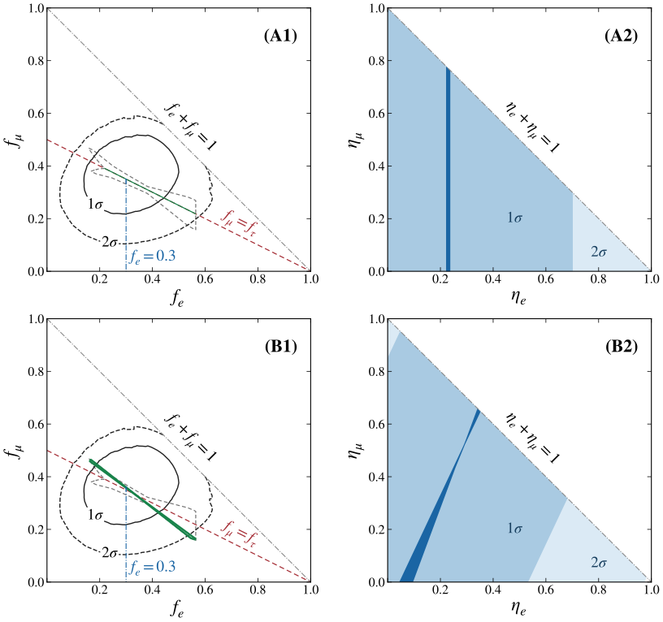
图注：在det P=0极限下，地球电子味份额f_e（或源份额η_e）与μ味份额的线性关联；A1、A2取CP相位δ=3π/2，B1、B2取δ=π。A1绿线与B1绿带是在图1一般裙形区域内允许的望远镜味比例。A2、B2的蓝色和浅蓝区域分别与近期IceCube数据的1σ、2σ轮廓相容。A2深蓝竖带与B2深蓝斜区分别由A1、B1取相同典型输入f_e=0.30推得。
怎么看这张图：沿深蓝带仍有多个源组成，说明一项地球味测量并不恢复全部源自由度。0.30是用于展示映射的指定输入，图中不构成某个已识别中微子天体的源味测量。
来源与置信度：arXiv HTML；source verified；https://arxiv.org/html/2609.35132v1/mutau_femu.svg
4. Uncovering the Physical Origins of Black Holes in the Milky Way for Astronomical Surveys
- 来源：arXiv / astro-ph.HE
- 链接：https://arxiv.org/abs/2610.07152
- 作者：Ilia Kiato, Pierson Lipschultz, Vicky Kalogera, Jeff J. Andrews, Max M. Briel, Abhishek Chattaraj, Seth Gossage, Philipp M. Srivastava
- 公告 / 来源日期：2026-10-07
- 阅读层级：相关简报
- 评分：novelty 7/10，importance 8/10，relevance 8/10，final 8.70/10
- 推荐理由：POSYDON隔离黑洞来源及稳定传质分支跨演化假设测试，13太阳质量特征依赖金属丰度。
中文题目：银河系黑洞的人口由哪些双星演化通道组成
问题、方法与结论：作者用POSYDON详细恒星演化网格构建银河系黑洞族群，基准计算采用太阳金属丰度、持续10 Gyr的恒星形成并按银河系恒星质量归一化。模型给出约4亿黑洞，其中约78%为孤立天体；孤立并不意味着诞生时没有伴星，恒星先合并和双星被踢散是主要来源。稳定质量转移还能填充紧致共同包层产物与宽距未相互作用双星之间的周期区域。
意义与贡献：将当前黑洞是否有伴星与其历史通道区分开，有助于联合解读微引力透镜、Gaia天体测量及X射线双星样本。约13个太阳质量的窄峰主要由太阳丰度下强恒星风造成，不能视作普适的坍缩特征。
可借鉴之处：作者逐项改变坍缩处方、出生踢速、共同包层效率、初始双星分布和金属丰度，追踪哪些质量—周期特征仍存在。稳定转移通道的这一分解，比单独比较一个黑洞总数更适合与未来选择函数一起使用。
局限与关注点：计数不是巡天可探测数，也不是宇宙学并合率；单一金属丰度、合并后恒星近似、黑洞吞并恒星时不增重等均影响预测。图13图注称基准模型而§V正文称fallback踢速模型，图中通道结构可读，但不能据此认定精确模型归属。
图13
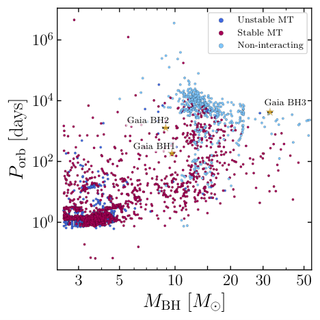
图注：基准模型中当前分离黑洞＋恒星双星的黑洞质量与轨道周期，按双恒星阶段的质量转移历史分类：不稳定质量转移为深蓝、稳定质量转移为紫红、未相互作用为浅蓝。稳定转移通道填补紧致不稳定转移系统与宽距未相互作用双星之间的区域，这一区域在快速族群合成中通常稀疏。
怎么看这张图：读通道如何占据质量—周期空间即可，不把点数视为Gaia可探测数。原图注写基准模型，但§V正文指向fallback踢速模型，模型归属存在文本差异，精确人口比较需作者澄清。
来源与置信度：arXiv HTML；source verified；https://arxiv.org/html/2610.07152v1/gaia_systems_fallback.png
5. Chana: A GPU-Accelerated AMR GRRMHD Code
- 来源：arXiv / astro-ph.HE
- 链接：https://arxiv.org/abs/2610.07267
- 作者：Tianshu Wang
- 公告 / 来源日期：2026-10-07
- 阅读层级：相关简报
- 评分：novelty 7/10，importance 8/10，relevance 8/10，final 8.70/10
- 推荐理由：GRMHD/多群中微子/动态时空集成与GPU标度有用，物理算法主要为既有方法组合。
中文题目：Chana：面向GPU的广义相对论中微子辐射磁流体代码
问题、方法与结论：Chana把动态时空、磁流体和多能群M1中微子输运放在块状自适应网格与GPU上，目标是核坍缩和致密天体模拟。论文用波传播、扩散、引力与多普勒频移、双黑洞穿刺及中子星坍缩等测试检查模块。在含三类中微子、每类12能群的核坍缩工作负载下，每块A100可达到约110万次RK4网格更新每秒；256块GPU的弱扩展效率正文报告超过85%。
意义与贡献：价值在于把辐射与物质的刚性耦合求解、自适应网格通信和时空演化协调起来，而非提出新的爆炸机制。解析雅可比矩阵与候选近似解降低了昂贵物态表查询和隐式求解开销。
可借鉴之处：可借鉴其按不同模块设置边界交换宽度，以及把微观辐射求解接受率纳入性能解释。球对称中子星坍缩的最终黑洞质量与初始总能量相符至约0.2%，是独立于速度测试的守恒诊断。
局限与关注点：M1矩闭合不能保留任意交叉光束结构，薄区空间通量也有扩散。吞吐率依赖网格块、每GPU负载和物质耦合程度；RK4与十阶段方案的每步速度不可直接当作同物理时间速度。代码尚非公开发布，论文称可联系合作；图10图注的下限为80%，与正文85%须分别保留。
图10
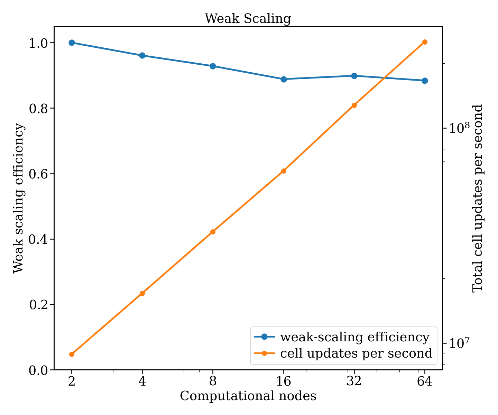
图注：在Perlmutter上测得的弱扩展效率及每秒RK4网格更新数随节点数的变化。每个节点有四块Nvidia A100 GPU；扩展到64节点、256块GPU时，图注报告弱扩展效率仍高于80%。
怎么看这张图：该图保持每GPU工作负载，测试的是弱扩展。正文给出的下限是85%，这里忠实保留图注80%的表述；吞吐率仍依赖块大小和辐射耦合求解，不代表所有科学模型的墙钟时间。
来源与置信度：arXiv HTML；source verified；https://arxiv.org/html/2610.07267v1/figures/weak_scaling_efficiency.png
6. Scalable and sequential inference of the neutron star equation of state with the Einstein Telescope
- 来源：arXiv / astro-ph.HE
- 链接：https://arxiv.org/abs/2610.07975
- 作者：Thibeau Wouters, Thomas C. K. Ng, Hauke Koehn, Fabian Gittins, Peter T. H. Pang, Tim Dietrich, Chris Van Den Broeck
- 公告 / 来源日期：2026-10-07
- 阅读层级：相关简报
- 评分：novelty 7/10，importance 8/10，relevance 8/10，final 8.70/10
- 推荐理由：序贯蒙特卡洛复用1500并合事件推断，计算效率进展明确但仅模拟目录验证。
中文题目：逐批吸收引力波事件，快速更新中子星物态方程
问题、方法与结论：作者将单个双中子星事件的潮汐后验压缩为条件归一化流，再用序贯蒙特卡洛逐批更新26参数物态方程。模拟Einstein Telescope一个月样本中，1579个检测事件有1555个成功进入流程；2000个粒子在有效样本数下降时重采样与移动。已有单事件结果后，整个层次更新可在一块H100上不到两小时完成。
意义与贡献：方法针对的是事件目录变大后反复联合推断的计算瓶颈。潮汐曲线在模拟中可收紧到约百分比，但压力曲线某些密度区间的95%可信带没有覆盖注入真值，说明观测量拟合好不等于内部物态方程已被唯一恢复。
可借鉴之处：可借鉴的是将昂贵的单事件推断与可增量更新的总体层分开，并记录有效样本数、重采样和真值覆盖。作者用无噪声对照检查偏差，给出观测噪声与物态参数退化的具体例子。
局限与关注点：两小时不包含每个事件约12分钟、128核的预处理成本。此测试固定自旋和外禀参数真值，仅采样质量与潮汐量，使用20 Hz低频截断及简化质量总体；选择效应未全面处理。全年三万事件约2.2天是外推，不能当作已跑完的真实目录分析。
图3
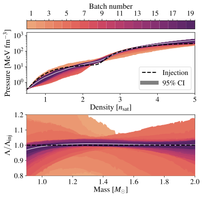
图注：每批事件处理后对物态方程（上）与潮汐形变率（下）的约束，均以95%可信带表示。黑虚线为注入物态方程，白线为处理全部事件后最终后验的中位数；中位数在每个密度或中子星质量处分别计算。
怎么看这张图：下方潮汐曲线的收紧不保证上方压力处处覆盖真值。逐密度中位数也未必对应同一个物态方程样本；这张图最值得看的是观测空间与内部参数空间的退化差别。
来源与置信度：arXiv HTML；source verified；https://arxiv.org/html/2610.07975v1/fig3_eos_constraints_et2l_n1579_noise_time_order.svg
7. Magnus: neutrino oscillation probabilities for any Hermitian Hamiltonian, any number of flavors, and any matter profile
- 来源：arXiv / astro-ph.HE
- 链接：https://arxiv.org/abs/2610.07159
- 作者：Mauricio Bustamante
- 公告 / 来源日期：2026-10-07
- 阅读层级：相关简报
- 评分：novelty 7/10，importance 7/10，relevance 9/10，final 8.70/10
- 推荐理由：通用Magnus振荡求解器和相位平均有复用性，算法性能提升而非新中微子发现。
中文题目：Magνs：以保幺正的Magnus展开计算中微子振荡
问题、方法与结论：Magνs把沿路径变化的厄米哈密顿量分段，用最高十阶Magnus展开构造演化矩阵；每次截断仍保幺正，并可在缓慢变化区切换到绝热输运。论文比较地球、太阳及超新星激波密度剖面，在变化剖面的高精度区比逐层常密度或常规积分更高效，同时支持多味和自定义新物理矩阵。
意义与贡献：优势是把数值求解与物理哈密顿量分离，允许同一套程序检验不同传播模型。保幺正保证总概率守恒，却不保证每个转移概率准确：不同粗网格可能以相同方式漏掉窄结构而看似收敛。
可借鉴之处：对超新星前沿，标记突变边界之外还要解析前沿内部；文中0.07 km前沿示例在指定精度下由约27毫秒降到0.5毫秒每概率。跨程序比较必须统一密度到电子势的常数定义，否则两个数值上收敛的程序仍会相差约千分量级。
局限与关注点：默认容差是相邻网格停止规则，不是严格误差上界；困难随机平滑剖面约二十五次中有一次无警告漏判。常密度、通常实验精度下专用程序更快。衰变、退相干、吸收及非线性集体振荡不在该线性封闭系统求解器范围内，本文没有执行作者附带示例代码。
图43
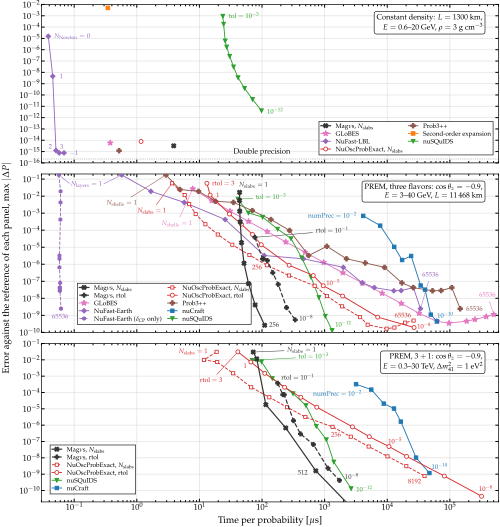
图注：八种代码的速度—精度比较：概率误差相对于各程序自己的参考解，横向比较计算一次概率所需时间。上：3 g/cm³常密度、1300 km基线；中：三味中微子穿越PREM地球核心的弦，天顶角余弦−0.9、基线11468 km；下：同一弦增加一个惰性态。Magνs与NuOscProbExact在地球面板各有两条曲线，分别调分层数与容差；Magνs容差曲线画到rtol=10⁻⁸，更紧设置落在图外。NuFast-Earth两条曲线反映扫描不同振荡参数的成本差别。3+1情形nuCraft的参考采用其假设的惰性势与带电流势之比0.5016，比等标量物质的0.5高0.32%；详见笔记本28与§8.2。
怎么看这张图：高精度变化剖面中Magνs有优势，常密度与宽松精度下专用代码可能更快。各自参考解的常数口径不同，两条曲线都误差很小并不保证它们的绝对输出相同。
来源与置信度：arXiv HTML；source verified；https://arxiv.org/html/2610.07159v1/speed_accuracy_combined.svg
8. Reflex instabilities I: Boundaries makes grid-based disc simulations frame-dependent
- 来源：arXiv / astro-ph.HE
- 链接：https://arxiv.org/abs/2610.08471
- 作者：Nathan Magnan, Michel Tagger, Clément Baruteau, Aurélien Crida, Jean-François Gonzales, Héloïse Méheut
- 公告 / 来源日期：2026-10-07
- 阅读层级：相关简报
- 评分：novelty 7/10，importance 8/10，relevance 8/10，final 8.70/10
- 推荐理由：指出网格边界参考系依赖可制造盘不稳定，数值解释的具体系统误差警示。
中文题目：反冲不稳定性I：模拟边界如何制造参考系依赖
问题、方法与结论：非轴对称盘的引力使中心天体运动，中心势又反过来扰动盘。作者在二维无压盘中解析求解这一闭环，发现当计算域只截取盘的幂律部分、边缘仍有非零面密度时，分部积分的边界项产生人工“括号模”。同样的截断盘在质心系可不稳定，在中心天体系却仅出现边际稳定模。
意义与贡献：问题已存在于连续方程及边界的组合中，并非提高网格分辨率就能消除。两种坐标系固定的边界对应不同物理区域，因此结果并不违反参考系变换规律，却会误导对大尺度单臂结构和偏心演化的解释。
可借鉴之处：可借鉴其先推导低频边界项，再用线性本征模与数值结果对照的方法。基准盘质量为中心体的6%；即便达到10%，自引力对质心系括号模增长率也仅改变约7%，不能靠加上自引力自动消除边界伪影。
局限与关注点：这是无压、二维、线性分析；真实有压盘在伴随论文中再处理。覆盖内腔至外缘可使边界项消失，但成本高且某些盘没有内腔。附录的质心守恒替代式未找到括号模，也不代表它在截断开放系统中就完全正确；需要同时检验边界通量与守恒。
图3
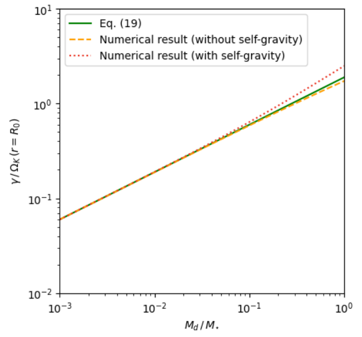
图注：质心系方程中不稳定括号模的增长率γ=−Im(ϖ)。采用§3盘模型，分别考虑有、无自引力。绿实线为式19的解析预测，预期适用于低质量盘；橙虚线与红点线分别为LAADS无自引力及有自引力的数值预测。绿橙相符验证解析预测，橙红接近说明自引力影响较小。横轴为盘与中心体质量比，纵轴增长率以参考半径处开普勒频率归一化。
怎么看这张图：低盘质量时解析与数值相符说明该模式源自所写方程和边界，并非离散误差。曲线随盘质量增长不代表真实天体一定出现该模，因计算域边缘非零面密度是产生它的关键条件。
来源与置信度：arXiv PDF crop；source verified；https://arxiv.org/pdf/2610.08471#page=5
9. Reflex instabilities II: The reflex motion of the central object drives at least seven instabilities in accretion discs
- 来源：arXiv / astro-ph.HE
- 链接：https://arxiv.org/abs/2610.08472
- 作者：Nathan Magnan, Michel Tagger, Clément Baruteau, Aurélien Crida, Jean-François Gonzalez, Héloïse Méheut
- 公告 / 来源日期：2026-10-07
- 阅读层级：相关简报
- 评分：novelty 7/10，importance 8/10，relevance 8/10，final 8.70/10
- 推荐理由：七类反冲不稳定及三类人为模式分类补足前篇边界问题，相关但独立线性分析。
中文题目：反冲不稳定性II：七类模态与阻尼边界的反作用
问题、方法与结论：伴随论文逐步加入压力、自引力和阻尼层，用二维等温盘的线性本征方程区分七类反冲模态。中心体运动激发密度波，波对盘密度的重排再改变中心体所受引力；边界反射可以闭合反馈。作者将此前Fargo3D中的某种增长模识别为“过阻尼模”：中等阻尼抑制增长，过强阻尼却让增长重新出现。
意义与贡献：这说明吸收边界的调节本身也可能产生结构。括号模、极窄盘的倏逝模与过阻尼模需格外警惕；腔模和SLING若由真实物理界面反射则可能具有天体意义，不能把七类都称作已观测的新不稳定性。
可借鉴之处：可借鉴逐个开启物理项、连续跟踪本征值和本征函数的诊断。图8中线性模式与Fargo3D结构大体吻合、本征值差异约10%以内，是识别过阻尼模的依据；只比较一张螺旋形态图不足以完成归因。
局限与关注点：参数空间并未穷尽，伪本征模筛除也可能误判。共振腔模的代数增长需要拉普拉斯分析，作者尚未证明其存在与稳定性；过阻尼反射机制同样只是解释候选。三维、磁场、非线性饱和及真实盘可否反射都待检验，不能据此宣称已解释ALMA盘结构。
图8
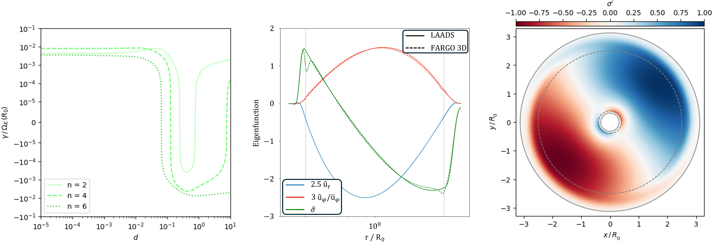
图注：左：图5前三个不稳定腔模的增长率γ随阻尼强度d变化；中等阻尼使其衰减，强阻尼下又恢复不稳定，因而称为过阻尼模。中：LAADS预测的n=2过阻尼本征函数与Crida等（2025a）Fargo3D实验中最快增长模式的结构比较；三个变量在三个不同方位角测量，两程序采用相同方位角。除灰虚线标出的阻尼层入口附近外，符合很好，本征值也在10%内相符，作者据此将旧模拟模式识别为过阻尼模。右：中间模式所致相对密度扰动的二维表示，灰虚线仍表示阻尼层入口。
怎么看这张图：左图的重新增长说明增强阻尼并非单调改善边界。中图的本征函数对照支持模式识别，但作者对反射机制仍持暂定解释；二维线性密度图没有预测非线性饱和值。
来源与置信度：arXiv HTML；source verified；https://arxiv.org/html/2610.08472v1/Figures/Overdamped_modes.png
10. Line-of-Sight Acceleration-driven waveform corrections for unequal-mass compact binary coalescences
- 来源：arXiv / astro-ph.HE
- 链接：https://arxiv.org/abs/2610.08492
- 作者：Mohd Asim Ansari, Avinash Tiwari, Sajad A. Bhat, Aditya Vijaykumar, Shasvath J. Kapadia
- 公告 / 来源日期：2026-10-07
- 阅读层级：相关简报
- 评分：novelty 7/10，importance 8/10，relevance 8/10，final 8.70/10
- 推荐理由：高阶模LOSA一致修正影响GW190814式不等质量系统，避免环境加速度伪证据。
中文题目：高阶引力波模态的视向加速度修正必须逐模处理
问题、方法与结论：双致密星若在外部引力场中加速，变化的多普勒红移会改变引力波相位与振幅。作者推导各球谐模的修正，并把它们逐模加入IMRPhenomXPHM。O5灵敏度、零噪声的GW190814类似注入表明：把主模修正套给所有模，或只修正主模，都可使啁啾质量与加速度的90%可信区间偏离注入值。
意义与贡献：这直接影响利用微弱加速度识别致密星环境的可靠性。作者重新分析GW190814后，无加速度模型相对有加速度模型的对数贝叶斯因子为1.04，只是弱偏好，不能反过来称作强排除或环境判定。
可借鉴之处：推导用红移下能量与频率之比的不变性核对振幅，同时要求驻相时间和频率的变换自洽。质量比更不对称、信号更长时高阶模与低频修正更值得检查；忽略振幅修正在本文测试中影响小，主要风险来自相位处理。
局限与关注点：修正采用小加速度一阶、准圆轨道条件；给出的偏差阈值依赖探测器灵敏度、加速度符号和质量。零噪声注入验证是受控模型测试，不能代表所有真实噪声。偏心且质量不对称的统一修正仍留待后续，文献争议须按这些适用条件比较。
图6
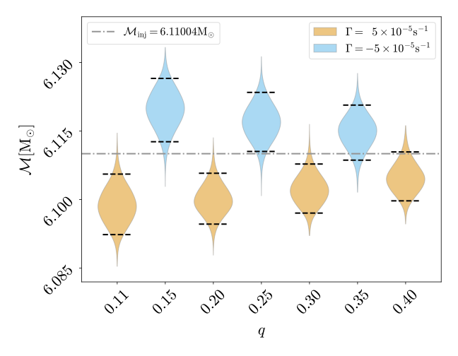
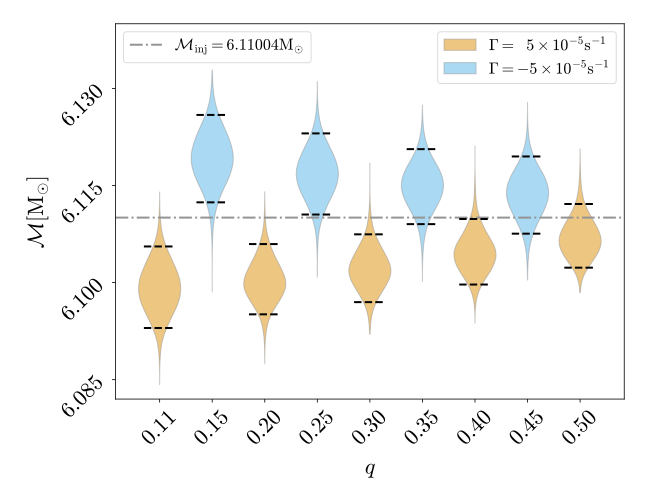
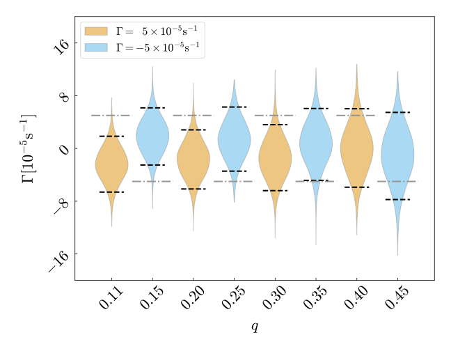
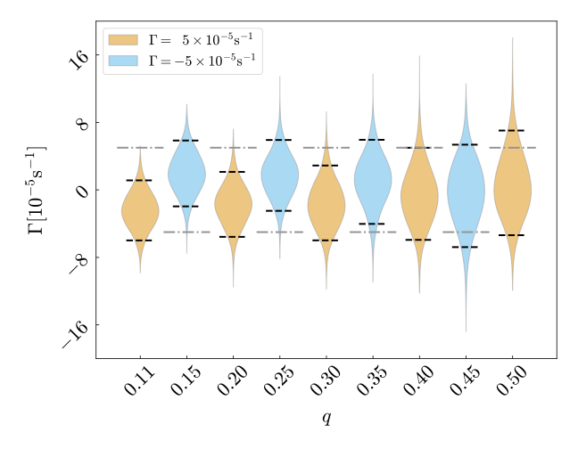
图注：左列为恢复波形把(2,2)模视向加速度修正施加到全部模时，啁啾质量ℳ（上）与加速度参数Γ（下）的后验；右列为仅修正(2,2)模、次主模保持不变时的相同后验。虚线标90%可信区间，点划线标注入真值。 网页将原图四面板依次纵向显示为左上、右上、左下、右下；横轴为质量比q，质量以太阳质量为单位，Γ以每秒为单位，黄色和蓝色区分正、负注入加速度。
怎么看这张图：先看真值是否落入后验区间，再比较随质量比改变的偏差。两列都是有意设置的错误修正方案，用来展示建模风险；零噪声注入下的偏差不能直接转译成真实事件发现显著性。
来源与置信度：arXiv HTML；source verified；https://arxiv.org/html/2610.08492v1/Mixed_LOSA_M_and_LOSA_and_q_vs_q_O5_5_minus_5_Chirp_mass_corr_to_all_modes.svg；https://arxiv.org/html/2610.08492v1/Mixed_LOSA_M_and_LOSA_and_q_vs_q_O5_5_minus_5_Chirp_mass_corr_to_only_22_mode.svg；https://arxiv.org/html/2610.08492v1/Mixed_LOSA_M_and_LOSA_and_q_vs_q_O5_5_minus_5_LOSA_corr_to_all_modes.svg；https://arxiv.org/html/2610.08492v1/Mixed_LOSA_M_and_LOSA_and_q_vs_q_O5_5_minus_5_LOSA_corr_to_only_22_mode.svg
11. A spatially resolved view of Fast Radio Burst host metallicities with Integral-field Spectroscopy
- 来源：arXiv / astro-ph.HE
- 链接：https://arxiv.org/abs/2610.07325
- 作者：Sunil Simha, Hsiao-Wen Chen, Wen-fai Fong, Sarah Hughes, Yuxin Dong, J. Xavier Prochaska, Nicolas Tejos, Tarraneh Eftekhari
- 公告 / 来源日期：2026-10-07
- 阅读层级：相关简报
- 评分：novelty 7/10，importance 7/10，relevance 8/10，final 8.35/10
- 推荐理由：五个FRB宿主IFU揭示整体金属丰度不代表爆发点，样本小而诊断价值明确。
中文题目：五个近邻FRB宿主的局部金属丰度并不等于全局值
问题、方法与结论：作者对五个红移低于0.05、目前未见重复的FRB宿主做积分视场光谱分析：四个使用Magellan/LLAMAS，另一个统一重分析Keck数据。由氢及氮氧发射线的O3N2指标估计气相氧丰度，宿主内部的95%空间范围约0.1–0.4 dex；四个爆发位置测得12+log(O/H)约8.5–8.9，第五个仅有上限。
意义与贡献：局部位置与整星系平均值的差别可超过通常报告的统计误差，因此用全局金属丰度讨论前身星形成条件可能带来偏差。FRB 20211127I的局部值8.81比宿主中位8.68高，但文中5.6σ以局部像素散布作分母，并非全系统误差后的发现显著性。
可借鉴之处：方法上先检查BPT电离诊断，再用同一强线标定和PSF加权比较局部与全局，是值得保留的控制步骤。长缝方向、诊断选择和星系覆盖范围可以分别改变估值，应先统一这些条件再谈物理差异。
局限与关注点：五个源不足以证明FRB偏好高金属丰度。氢线在约千秒差距尺度的伴随支持近期恒星形成环境，却未测出磁星形成概率；AGN混合、标定、未检出像素和有限视场均受限。正文与图4上限分别出现2σ和3σ口径，报告仅给上限并标明此差异。
图4
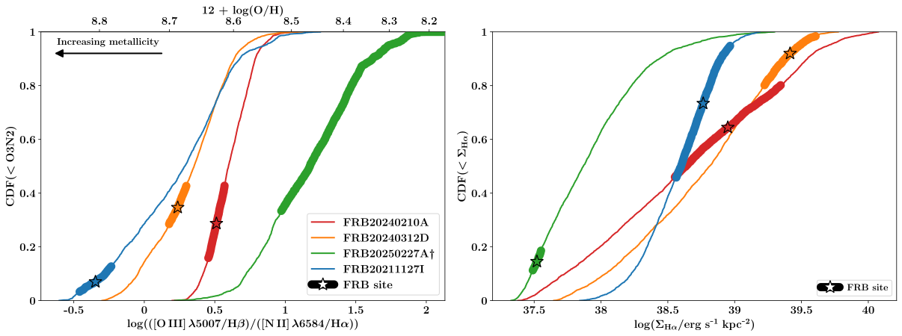
图注：左：图3中逐空间像素O3N2值的累积分布，每条曲线对应一个FRB宿主，顶部横轴换算为12+log(O/H)。黑星表示FRB位置的PSF加权平均值，每条曲线上的粗线表示PSF加权的像素间金属丰度标准差。FRB 20250227A给出O3N2的3σ下限、相应氧丰度上限，因此不画星号。FRB 20250316A因视场只覆盖宿主很小部分，不画分布曲线。右：以同样方式比较Hα表面亮度累积分布与爆发位置。
怎么看这张图：局部位置相对宿主分布的偏离，比单个全局金属丰度更有信息。误差主要描述局部像素散布，未包含全部标定系统误差；正文另一处写2σ上限，故不混合两种置信口径。
来源与置信度：arXiv HTML；source verified；https://arxiv.org/html/2610.07325v1/combined_O3N2_hist_psf_halpha_notop.svg
12. Adaptive proposals for nonparametric equation-of-state inference with RIFT: iterative Gaussian-process refinement in a compressed sequence representation
- 来源：arXiv / astro-ph.HE
- 链接：https://arxiv.org/abs/2610.07424
- 作者：R. O'Shaughnessy, Z. Zhu
- 公告 / 来源日期：2026-10-07
- 阅读层级：相关简报
- 评分：novelty 7/10，importance 7/10，relevance 8/10，final 8.35/10
- 推荐理由：固定先验下自适应建议分布改善EOS有效样本，校准条件与先验半径上界需谨慎。
中文题目：自适应物态方程采样：提高效率并不等于消除先验
问题、方法与结论：作者在中子星可观测序列的主成分空间拟合提议分布，让新样本集中到数据支持区域。固定数据时用多重重要性权重保留原科学先验；在千事件合成目录中，作者则采用近似的逐批高斯投影。与十万次固定先验抽样相比，该示范的均值差约0.4%，标准差却大约宽1.5倍，明确量化了提议更新的近似代价。
意义与贡献：潮汐形变率即使达到百分比精度，也未必能同样精确地恢复核物质参数。千事件例中对称能斜率不确定度约从29降到21 MeV，曲率几乎未改善；扩展中子星质量范围或加入核实验探针比重复相同密度范围更有用。
可借鉴之处：可借鉴其把先验改变、提议改变和后验投影分开，并用足够大的固定目标参考计算校验。有限样本库的有效样本数过低时，其自身的窄区间也可能失真，不能把它当无误差标准。
局限与关注点：NICER部分使用公开后验重叠，未除去原分析采样先验；11.7±0.4 km只是给定低密度锚点与近似下的演示，论文明确不视作稳健半径测量。平滑单稳定分支表示不能忠实覆盖强一级相变；实验“未来精度”是作者设定的情景值，不是实验承诺。
图11
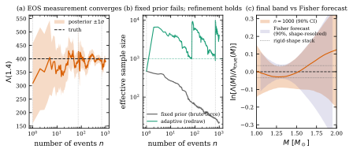
图注：大目录方法测试：1000个采用简化宇宙学的第二代HLV双中子星事件。(a) 1.4太阳质量处潮汐形变率随事件数变化，自适应后验的±1σ区间向虚线注入真值收缩，竖点线标细化轮次。(b) 固定先验直接重加权的有效样本数（灰）下降约20倍，自适应样本（青绿）在每次重抽样后恢复。(c) 最终1000事件的潮汐形变率—质量关系90%带相对真值，并与解析形状的Fisher预测阴影比较；系数空间信息由全部事件累积。其质量依赖与后验一致，对该目录的宽度也与收敛的固定先验计算相容；固定形状叠加的点线宽度低到约0.75倍。所示自适应带在这次标定中偏保守，标准差比收敛参考大1.5倍。
怎么看这张图：锯齿表示抽样效率恢复，不代表新物理信息凭空增加。必须同时看十万样本固定目标参考；图中的高斯投影是近似，不应与固定数据时保留完整重要性修正的估计器混称。
来源与置信度：arXiv HTML；source verified；https://arxiv.org/html/2610.07424v1/fig_hero.svg
说明
评分由 LLM 给出初评，再由本地阈值策略过滤；IACT、TeV 伽马射线和高能中微子天文学按重点方向处理。